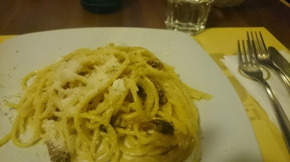

| 魔法使いと行く海外旅行: 中欧・東欧編 | |
| ユウキ | |
| (2017) | |
目次
ハンガリー
プロローグ
「グルメだね」
メテムが目の前のシュガードーナツを見て呟く。
「え、そのドーナツ？」
僕は驚いてドーナツをしっかりと見る。が、いつも食べるドーナツと何ら代わり映えがない。
「んなわけないだろっ。こんなのどう見てもただのドーナツだっつの」
そう言うと器用にフォークをドーナツの穴に差し、クルクルと回して見せた。
ここは都内某所のタリーズ。季節はちょうど春が終わる五月だ。南アジアから帰国した僕たちは、都内でゆっくりと疲れを癒やしていた。プライベートの旅行から帰ってきて疲れを癒やすという表現もおかしいけれど、まあご存知の様に色々あったので疲れていたのだ。
「それでさ、これ見てよ、これ」
そう言うとメテムはバサッと雑誌を机に広げた。言われるままに目をやると、何やらパスタ特集のページのようだ。カルボナーラにアラビアータ、見るからに美味しそうな写真が並んでる。
「メテム、このレストラン行きたいの？」
なんとは無しに口に出す。
「そ、う、じゃ、な、い、っての！ 旅だよ、旅。次の旅のテーマ！」
「旅？ ああ、そういうことか」
ようやく理解した。メテムは次の旅について話していたのだ。
「そうそう、グルメグルメ。今度はグルメにしたいの」
嬉々とした顔で身を乗り出す。そして矢継ぎ早にセリフを続けた。
「ほら、南アジアはさ、良かったんだけど、グルメの方はイマイチだったじゃん」
「分かる分かる。もう何食べてもカレー味だったよね」
「うんうん、もうあのスパイシーはコリゴリ。だからさ、次は美味しいものがある所に行きたいの！」
「例えば？」
「こないだ調べたんだけど、やっぱりヨーロッパ辺りがグルメは良いらしいじゃん？」
「そうだね、チーズもあるし、ワインもあるし、パスタにピザになんでもござれ、だね」
「うん、次はヨーロッパに行こう」
「候補は決めてるの？」
「まずイタリアってところには必ず寄りたいな。パスタとかラザニアの本場を食べたい」
「ああ、いいねえ。あそこはジェラートもあるしね。他にはどこ？」
「後はどこだろ、調べてみたところ、ハンガリーだかハングリーだかそんなところにフォアグラがあるらしいね」
「ハンガリーね。というかフォアグラを君が知ってることに驚きだよ。まあでもあそこには温泉もあるし僕も興味あるよ」
「んじゃさ、ハンガリーから陸続きでイタリアへ近づいてみない？」
そう言われて僕は頭のなかに地図を思い浮かべる。ハンガリーはどこだっけ......イタリアは......うん、まあ陸伝いに行けなくはない。
「いいね、結構時間かかるし、三、四カ国跨ぐけどまあ問題ないか」
「途中面白そうなところがあれば寄るも良し、無けりゃまっすぐ向かうも良し。特に急ぐ旅でも無いんだし、ブラブラ行こうよ」
「それもありだね」
「よし、片道チケットだけ買って、すぐにでも出発しよう。ヨーロッパ・グルメツアーここに始まれり、だ」
そう言うとメテムはフォークでクルクル回していたシュガードーナツを横からかぶりつき、一息で飲み込んだ。そして流しこむようにコーヒーを飲むと、出発が待ちきれないように勢い良く飛び上がった。
「わ、わ、メテム、待ってよ。ちょっとちょっと......」
慌てて僕もコーヒーを飲み干し、サクサクと歩き出したメテムの後を追うのだった。
ブダペスト
「ふぃ～、極楽極楽。これこそ世に言う天国かもしれないね」
隣で体をプカプカ浮かばせながらメテムが呟く。
「分かる分かる。晴天の下、こんな体験できてると本当にそう思うよ」
そう言うと僕も仰向けになって空を覗き込んだ。
ここは東欧にあるハンガリーは首都ブダペスト。先日、日本からモスクワを経由してたどり着いた旅の最初の都市だ。そして今いる場所、それはハンガリーといえばここだと言うべき、そう、温泉だ。知らない人もあまりいないと思うが、ハンガリーは日本に負けず劣らず温泉大国として有名だ。国内に無数の公共温泉があり、国民にとっても身近な存在だ。その中でも格段に有名なのが、ここセーチェニ温泉。
屋外にあるこの温泉は、水着を着て男女混浴で入ることが出来る。なので隣にいる我らがメテムも、今日はチャーミングな水着を着ている。黒いセパレイトのビキニで、後ろについた大きなリボンが特徴的だ。ただ残念なことに胸に少し膨らみが足りないのがセクシーさに欠ける......と、やめておこう。こんなことを考えてると、メテムの神がかり的な勘で探られてしまう。
「ユウキ！」
!?!? え、まさかもう勘ぐられたか。
「な、何？」
僕は思わず声をうわずりながら応えた。だがそれがまずかった。
「なんでそんな動揺してるんだよ。何か変なこと考えてたのか？」
「い、いや、違うよ違うよ。温泉気持ち良いなって」
「ふ～ん......そんな感じじゃ無さそうだけど」
思わず冷や汗が流れる。
「まあいいや。というかあそこほら、見てみろよ」
そう言われてメテムが指差す方を見てみる。するとそこには温泉に浸かりながらチェスに興じている老人たちがいた。そう、先程説明出来なかったが、セーチェニ温泉が有名なのは、温泉をしながらチェスが出来るという独特の風習の為だ。温泉の壁際では至る所で皆がチェスをしている。この晴天の気持ち良い中、温泉に浸かりながらするチェスというのはきっと格別気持ち良いのだろう。僕はチェスのルールは知らないけれど、楽しそうにしているのを見てるだけで気持ちが伝わってくる。
ハンガリーの温泉はシステムもよく出来ており、僕たちのような旅行者にとっても使いやすい。一日チケットを四千六百フォリント（千六百円程）で購入するとリストバンドが支給され、それでロッカーが使えるようになる。それから水着に着替えて合流だ。水温もちょうど良い感じの三十六度ぐらいだ。ぬるま湯にじっくり入るタイプの僕にはまさしくうってつけと言える。
「ふぃ～」
横を見るとメテムが体を沈めて気持ちよさそうにしていた。
「メテム、メテム」
「ん？」
「メテムのいた世界でも温泉とかはあったの？」
「んー、まあこんな感じじゃないけど、似たような物はあったよ」
「そうなの？」
「うん、もう少しワイルドな感じのだけど」
「ワイルドって？」
「んー、熊だの鹿だのが遠慮なく入ってくる感じかな」
「え......熊に鹿？」
「うん、熊とか鹿は大人しいから平気だよ。でもたまに厄介なモンスターまで浸かりに来るからねえ」
「そ、そうなの？」
「うん、まあ温泉に来たいだけだから邪険にも出来ないけど」
「す、凄いね......」
「まあね、そういう時は温泉のお湯使ってウォーターパペット召喚してお帰り願ってたね。いっちょ召喚しようか？」
「え？ ここで？」
「うん」
「いやいや、いいよいいよ。大事になっちゃう」
「キシシ、冗談冗談」
そう笑うとメテムが僕の腕に絡みついてきた。小さな可愛い胸が僕の腕に当たる。
「さっきちらっと見ただけだけど、ヨーロッパってところは、街並みが日本とは全然違うねえ」
「そうだね、日本は木で家作るけど、こっちは大理石の文化だからねえ」
「うんうん、雰囲気がもうガラリと変わる。あとさ、食べ物もやっぱり全然違うみたいだね」
「こっちはほら、トマトとかオリーブとかチーズとか、そういうのが進んでるね」
「ほうほう、醤油や味噌とは全く違うみたいだねえ。私けっこうソッチのほうが好きかもしれない」
「僕も洋食の方が好きだよ」
「今日の夕食の予定は？」
「うん、ハンガリーといえばやはりリバマーイだね」
「リバマーイ？」
「そう、リバマーイ。要はフォアグラってこと。フォアグラのポワレを食べよう」
「あ、フォアグラの事なの？ そりゃとても楽しみだ」
「うんうん、まあでも夕食までまだ時間あるし、ゆっくり街を散歩しよう」
「オッケー、楽しみにしているよ」
そういうと僕たちは温泉に浸かり、暫くの間その湯を堪能した。
ブダペストという街は、ドナウ川を挟んで東側にある旧市街のブダと、西側にある新市街のペストが合体して出来た都市だ。その二つの街を結びつけるのが九つの鎖橋で、中でも有名なのが世界遺産にも登録されているセーチェニ鎖橋だ。何やらライオン像が入り口に置かれ、街のシンボルとして存在しているようだ。セーチェニ温泉を出た僕たちもまずはそこに向かうことにした。
「タラタンタンタン、ターラッタ～」
隣ではメテムが何かの歌を口ずさみながら陽気にしている。
「随分気分良さそうだね」
「うん。こういうさ大理石の都市はいいねえ」
「そうだね～、雰囲気落ち着いているし、何というか知的な感覚があるね」
「そうそう。私の世界にもさ、こういう街あったんだけど、ちょっと遠いからあんま普段行かないんだよね」
「なるほど、僕も日本にはないから楽しいよ」
そんなやり取りをしながら僕たちは街を練り歩いた。住民たちにとっては特段心躍る風景ではないだろうが、それでもなんとは無しに行き交う人々を見てみると、幸せそうな感じがする。西欧に比べて暗く控えめな印象が強かった東欧だが、実際に来てみると意外にもそうではないことに気がついた。決して浮かれているというわけではないが、人々の顔には影は特に見えない。なかなか面白い気づきだ。
「ユウキ、ちょっとちょっと」
人々を観察していると、メテムが僕の腕を引っ張った。
「なになに、どうしたの？」
「あそこ、ほら、マーケットがあるっぽい」
「マーケット？」
思わずメテムが指す方向を見ると、確かにセントラル・マーケットと書かれた看板のある建物があった。
「ちょっと寄って行かない？」
楽しそうな笑みをこちらに向ける。
「うん、いいね。まだ時間はたっぷりあるし、ちょっと見てみよう」
そう言うと僕たちは建物の中へと向かった。
マーケットの中は、フロアー一杯に店がひしめいていた。肉屋や乾き物屋、野菜屋等の他に、その場で食べれる簡単なレストランがあった。そして勿論僕たちの好きなリバマーイ屋もある。
「うわ、すごい。これ全部フォアグラ？」
メテムがショーウィンドウにぎっしりと置かれたフォアグラの缶詰を見ながら声をあげた。確かにこれは僕も驚きだ。日本でフォアグラというとルージエが真っ先に思い浮かぶが、正直そこまで選択肢があるとは言えない。しかし今目の前には見たことのない種類のフォアグラが沢山ある。
「うーん、壮観だねえ」
「ユウキ、何個か買って帰ってさ、ホテルで食べない？」
「いいね、しかしどれを買えばいいのかな」
「うーん、うーん、悩むねえ」
首を小さくかしげながらメテムはフォアグラを見つめる。しばらく唸っていたが、やはり決まらないようだ。するとその様子を見ていたお店のおじさんが話しかけてきた。
「こんにちは、お嬢さん。フォアグラをお探しかい？」
「あ、うんうん。そうなの。あとでパンに挟んで食べようと思ってんだけど何かオススメある？」
「パンに挟んで食べるか。それならばこれだよ」
そう言うとおじさんは数ある中から深緑のパッケージの缶詰を持ってきた。
「お嬢さん、これはね、トカイワインが入ってるフォアグラのテリーヌなんだよ」
「え、ワインが入ってるの？」
「そうそう。ハンガリーのワインといったらこのトカイワイン。それを練り込んでるからまさにパンに挟んで食べるのにうってつけだよ」
「わー素敵！ ユウキ、これにしよう、これに！ おじさん、一個頂戴」
「ほいよ、まいどあり！ それならお嬢さんの為に一個小さなポーションをつけておこう。これは気軽に食べれるから、小腹が空いたらお食べ」
そう言うとおじさんは缶詰とは別に小さなポーションをつけてくれた。
「やったー！ おじさん、ありがとー！」
僕もお礼を言いながらお会計を済ませる。一体如何ほどのお値段かと思ったが、三千フォリント（千二百円）と、庶民向けの設定だった。やはり生産される量や消費される量が絶対的に日本と違うので、随分身近な存在なのだろう。ありがたいことだ。フォアグラを購入した僕たちはもう少しマーケットを歩いた。途中コーヒーを買い歩きながら飲んでいると、パン屋に出くわした。
「ユウキ、調度良いしここでパンでも買ってかない？」
「いいね」
そう言うと僕たちはカウンター越しにパンを覗いた。マーケットの中だからか、はたまたハンガリー全体の相場なのか、パンの値段も随分安い。メテムの顔ぐらいにあるサイズのパンがなんとたったの百フォリント、つまり三十円で買える。これぐらい安いなら住民の生活も楽だろう。そんな事を思いながら僕たちはそのパンを一つ購入した。
マーケットを堪能した僕たちは、その足でまっすぐ鎖橋へと向かった。途中少しだけ道に迷ったが、まあとにかくドナウ川を目指せばいつかは着くわけだ。大体の方角に目安をつけて僕たちは進んだ。すると程なくしてドナウ川へ辿り着いた。岸辺から眺めると、確かに巨大な橋がいくつも作られている。お目当てのセーチェニ鎖橋は......というと、ここからでは残念ながら区別がつかなかった。仕方ないので歩く人に聞きながら探し、しばし歩いた末にようやく見つけることが出来た。
セーチェニ鎖橋は先程言ったように、入り口の左右にライオン像が飾られている。例えに出すのも若干変だが、日本橋三越のライオン像をもう少し大きくした形を想像してもらえるとわかると思う。まあそんな感じだ。
それから僕たちは橋を渡り始めた。幅の広いドナウ川にかかってるだけあって、歩くと結構距離がある。それでもすれ違う人に挨拶しながら進む内に、中央部分へと辿り着いた。着いてみて分かったのだけれど、この巨大な橋は多くの橋がそうであるように作りがむき出しになっている。つまり橋の芯であるアイバーチェーンやら基礎の部分に触ることができる。そしてあろうことか若者は皆その部分によじ登り、休んだり写真を撮っていた。
「うは、凄い事してるね、彼ら」
驚き半分呆れ半分僕はメテムに言った。
「そう？ あそこ結構休めそうでいいと思うよ？」
「え、何、メテムもああいうの大丈夫な方？」
「うんうん、全然問題ないよ。高いところ好きだもん」
「そ、そう。僕も苦手じゃないけど、どうしても人の目気にしちゃってさ」
「人の目ったって、皆登ってるじゃん」
「そうだね、ハンガリーなら大丈夫なのかもね」
「うんうん、日本人はそういうところ気にするからなあ」
「まあ同調主義だからねえ。さて、メテム、この後どうする？」
「どうするって？」
「いやほら、ブダペストの街を高いところから眺めてみたいなと思ってるんだ。近くにゲッレールトの丘ってところがあるんだけど登って見てみない？」
「ん？ 高いところ？ 別にそこ行ってもいいけど、もっと便利なのが今目の前にあるのに？」
そう言うとメテムは首を傾げながらこちらを向く。
「え、高いところ？ どこのこと？」
すぐに聞き返すと、メテムが顎をくいっくいっと頭上に向けた。何か飛行船でもあるのかと思って見てみたが、そんなものはなく、そこにはただ橋の主塔があった......。
「メ、メ、メテム、ちょっと待って、ちょっと待って」
僕は全身をバタバタとさせながら、メテムの背中に話しかけた。
「なんだよ。落ち着きなって。大丈夫だからゆっくりついてこいよ」
「大丈夫って、とても大丈夫じゃないんだけど......」
そう言うと僕は必死になりながら空中を「飛んだ」。
メテムがかけてくれた魔法、シルフィードというらしい。何やら重力にある程度逆らって進める魔法のようだ。しかし使い慣れているメテムと違って、初めての僕にとってはもう生きた心地がしない。誰かに見られてはいないかと最初は気を使っていたが、今はもう登るのに必死だ。アイバーチェーンに足をつき、また蹴上がる。すると普通のジャンプとは違い大きく勢いがつき飛び上がり、そしてまたゆるやかに落ちていく。それからまたアイバーチェーンを蹴るという感じだ。橋の中央で基礎部分に跨っていた若者とはわけが違う。正真正銘僕たちは立入禁止の主塔の屋向かって進んでいるのだ。
「キャッホーイ」
目の前でメテムの声が上がった。どうやら屋上へ到達したようだ。無邪気にこっちに向かって手を降っている。僕はもう怖いので下を見ないようにしながら向かっていた。そして最後の方はあまりの高さに足がガクガクとしていたが、何とか何とか辿り着くことができた。
「ふぃ......」
屋上に腰を下ろすと、僕は思わず安堵の声を上げた。
「なんだよ、大げさなやつだなあ」
「そうは言うけどね、僕たちの世界ではこんな体験する人はいないんだよ」
「まあいいさ、ほらこっち来てみ。めちゃ眺め良いよ」
「ごめん、今足がガクガクしちゃって行けない」
「もー、ほら、来いって」
そう言うとメテムは僕の腕を掴み体を引き上げた。メテムの手に引かれるようにして屋上の縁にたどり着く。するとそこには地上からは想像出来ない絶景が待っていた。
「うはー、こりゃ凄い......」
思わず言葉が出る。当然だ。ここからは遮るもの無くドナウの真珠と謳われたブダペストの街が一望に出来たのだ。
「流石に綺麗だねえ」
メテムも横で呟く。
「うんうん、東側の旧市街ブダは煌々と灯りがあって石造りが映えるから見事だね。西側も議事堂や王宮が厳かな雰囲気するね」
「ほら、やっぱ登ってみて正解だったじゃん」
「いやそうだけどさ、ほら、登るための手段と言うか何というか......まあいいか」
そう言うと僕は縁に登り腰をかけた。メテムも機敏に飛び乗り隣に座る。
「んっん～」
大きな声をあげてメテムが体を伸ばした。釣られて僕も体を伸ばす。
「でもメテム、とりあえず最初の国の選定としては間違えてない感じがしない？」
「今のところは、ね」
「うん、今のところは」
「まあでもハンガリーのイメージが決定づくのは次かな」
「次？ ああ、リバマーイ？」
「そうそう、果たして本場のフォアグラがどんなもんか、いっちょ試してみようじゃないの」
「そうだね。美味しいといいね」
「いやもうここまできて美味しくなかったら、私もう暴れちゃうね。シェフにこっそりファイアーボールでもぶつけちゃうと思うよ」
そう言うとメテムは口を横に広げて笑った。
「で、ユウキ。お店は当てがあるの？」
「もちろん。ホテルの近くに高級ハンガリー料理屋があるの確認済み」
「いいね。でも高級なんだ」
「うん。庶民のところもいいけど、どうせなら良い物試してみたくてね」
「そか。それなら楽しみだねえ。他に有名な食べ物は何かある？」
「ハンガリーは他にパプリカが有名だよ」
「パプリカ？」
「うん、パプリカを使ったスープ、グヤーシュスープっていうんだけど、それが名物らしい」
「ほうほう、じゃ、それも頼んでみますか」
「そうだね、楽しみだ」
「ちょっとさ、まだお腹底まで空いてないから、もう少しゆっくりしたら行こうか」
「勿論。せっかく怖い思いして来たんだから、まだいるよ」
「キシシ、そだね」
それからメテムは僕の肩に小さな頭を傾けてチョコンと乗せる姿勢を取った。すぐに体重の多くが僕にかかってくる。何一つ疑うこと無く全身を預けてくるメテムを、僕は包み込むように腕でくるんだ。それから僕たちは、少しずつ街の色がオレンジ色に染まっていくのを誰もいない主塔の上でゆっくりと見ていた。
「よし、そろそろ行こうか」
辺りがすっかり薄暗くなった頃、メテムが突然すくっと立ち上がった。
「そうだね、そろそろ頃合いかも」
僕は縁に立ったメテムを慌てて落ちないように手で囲いを作りながら答えた。
「お腹も適度に空いてきたね」
そう言うとメテムは呪文書を広げて、僕とメテムに呪文をかけた。おそらく先ほどのシルフィードだろう。それから縁をそのまま器用に歩き、アイバーチェーンの接触部分へ向かっていった。僕も慌てて地面に降りてメテムの元へと向かう。
「よし、んじゃ一気に急降下。リバマーイまでレッツゴー」
そう言うやいなや、メテムはまるで身投げをするように体を外に投げ出した。僕は「あっ」と声をかけて縁の外を覗きこんだが、すでにメテムはアイバーチェーンの上を颯爽と勢い良く降りていた。僕も足元のアイバーチェーンの上を外すことの無いよう注意しながら後を追った。
リバマーイ
目星をつけていたレストランへは、特に迷うこと無くたどり着くことが出来た。なんてことはない、ホテルの二ブロック横にあったのだ。入り口にはドアマンが立っていて、外から覗きこむ限り、とても良さそうに見えた。ここなら外れということは無いだろう。僕たちは迷うこと無く店内へと向かった。
店内に入ると、ドリンクメニューの中からガス入りウォーターを頼み、それからすぐにフードメニューへと目を向けた。
「リバマーイ、リバマーイ、と......」
メニューを端から眺める。少しずつ追っていったのだが、メインの欄に大きく書かれていたのが直ぐに見つかった。
「メテム、あったよ、リバマーイ」
「そりゃあるだろ。何言ってんだおまえは」
「......」
メテムの容赦無い突っ込みを受け少し胸が傷んだが、僕は他の名物を探した。するとスープの欄に多数の中に混ざってグヤーシュスープがあるのを見かけた。メテムに伝えようかと思ったが、先ほどの突っ込みを思い出し僕は黙っていた。それからもう一品ほど何か無いかと探す。本当ならクリーム系のパスタでもと思ったのだが、流石にハンガリーに来てすぐにイタリアンを食べるわけにはいかない。色々眺めていた所、面白そうなものが見つかった。パプリカのラビオリだ。同じパプリカなのでグヤーシュスープと被ってしまうが、こちらはクリーム系、あちらとは違うはずだ。そう思って僕はそれを頼むことにした。ちなみにメテムだが、選定はすっかりお任せの様で、店内をキョロキョロと見回していた。
ウェイターを呼び、オーダーを済ませる。メテムの方から特に苦情はこなかったので、まあ問題はなかったのだろう。それからガス入りウォーターを飲みながら待っていると、程なくしてウェイターが小さな金属製の鍋を二つ持ってきた。机に置かれたそれはボウルみたいな形状をしていて、脚がある作りになっている。ウェイターが恭しく蓋を開けると、濁った茶色いスープが入っていた。
間違いない。これがグヤーシュスープだ。予想より若干どぎつい色に驚きながら、まずはその香りを嗅いでみる。......しかしこれが、正直なんと形容したら良いのかが難しい香りだ。パプリカパウダーが入っているらしいのは知識として知っていたが、そもそもパプリカの香りが分からない上に、さらにコンソメのようなまで仄かに香る。隣を見るとメテムも嗅いでいたが、同様にしっくりこないのか、首をかしげていた。このままいてもしょうがない。僕は早速飲んでみることにしたスプーンでよそってみると、意外に具材が多いのが分かる。牛肉に玉ねぎ、トマトが見えた。そしてゆっくりと口に含んでみると......これがなかなかいける。ただ香りと同様に表現が難しい。トマトスープってわけではなく、かといってコンソメかと言われると適切では無いし......まあ要するにこれがパプリカの味なんだろう。馴染みは全くないけれど、若干スパイスが効いていて、これはこれで悪くない。もともとお腹が空いていて、かつあまりスープの量がなかった事もあって、僕たちはあっという間に平らげた。
それからすぐにウェイターがまたやってくる。今度は白い皿を手に持っている。リバマーイか、あるいはラビオリか。どちらか気にはなっていたが、皿の上には折りたたまれたパスタ生地の様なものがあった。これがラビオリなのだろう。ただ、その見た目は僕が想像していたものとは若干違っていた。パスタの麺を切る前の平べったい状態のものがそのまま畳まれていて、その上に白いソースとパセリのような物が乗っている。そして周りには、おそらくパプリカソースであろうオレンジ色のソースが並々と注がれていた。これもなかなかキャッチーだ。
あまり食欲をそそられる見た目ではなかったが、意を決して食べてみる。すると、こちらも先ほどのグヤーシュスープのような味がした。そして少し酸味のある味もする。おそらく白いソースはサワークリームだ。そしてラビオリの中には肉が詰まっているようで、食べごたえがなかなかある。が、やはり全体としては先程の味に被っている。ちょっと選択を間違えたか。メテムがどうせ非難の目を向けているだろうから、僕は黙々とラビオリを平らげた。
グヤーシュスープとラビオリをお腹に入れた事でちょっと落ち着いた感じがする。それはメテムも同じようで、少し余裕が出てきたのか僕らは雰囲気に浸りながら会話を楽しんだ。そしてお待ちかねの品が届いたのは、しばらく経った頃だった。
二人の目の前に大きな白いお皿が置かれる。待ちきれないように覗き込んだその先には、見事に盛り付けがされているフォアグラがあった。
「おー、これはこれは......」
思わず感嘆の声が出る。
「凄い見た目だねえ」
メテムも正面から声を上げた。無理もない。目の前のリバマーイは、普段僕たちが食べるフォアグラ料理の盛りつけとは明らかに違っていた。まずグリルドオニオンとパプリカが一番下に敷き詰められ、それから輪切りにされたフライドポテトが上に乗っている。そしてその上に鎮座しているのが巨大な三枚のフォアグラのポワレだ。そして日本と決定的に違うのは、フォアグラの定番のバルサミコソースやトリュフソース等は見当たらず、代わりに全体として黄色いソースがかけられていることだった。
「ふっふーん、これはなかなかやるじゃないの」
メテムがフォークでフォアグラを刺しながら言った。
「メテム、これ、何味なのかな？」
「さあねえ。バターソース？ なんだろう」
「うーん、まあ食べてみますか」
そう言いながら僕はフォアグラを口に含んだ。......すぐに口の中に広がったのは塩味。そして後から溢れだしたのは圧倒的なフォアグラの脂。
「塩味だ......」
同じことを言おうと思ったが、メテムのほうが先に声を出した。そう、このフォアグラは塩で味付けされているのだ。
「珍しいね、というか塩味のフォアグラなんて初めて食べたよ」
「そうだねえ。普通バルサミコソースとかだよね」
驚きながらも僕たちは次々にフォアグラを口に運ぶ。日本人の僕にとっては新しい味付けではあるが、これはこれでとても相性が良い。それも当たり前か。フォアグラの調理を日本人以上に知り尽くしたハンガリー料理店が出しているのだから。そして一緒にフライドポテトやグリルドオニオンを食べると、脂と絡まり元の素材を更に良くした味になる。僕たちは黙々と食べ続け、気づけばあっという間に三枚のフォアグラを食べていた。
「メテム、どう？」
「うん、これなら当たりだね。文句のつけようが無い」
「良かった」
「まあ新しい味だったから戸惑いはあったけど、逆に言うとこういう味付けを知れたのはでかいねえ」
「そうだね、バルサミコで出てきても面白み無いかもしれないね」
「そうそう、現地ならではの味付けっていうの？ そういうのが楽しめたよ」
「だねえ」
すっかり口の中が満たされた僕たちはしばらくフォアグラの余韻に浸った。
「ユウキ、お会計幾らだった？」
レストランを出るとメテムが口を開いた。
「八千五百フォリント。つまり三千円ぐらいかな」
「おー、あれだけ食べてその値段ってのは凄いね」
「そうだね。さっきのパンもそうだけど、ハンガリーはユーロじゃない分やっぱ安いんだよ」
「そうなのか」
「うんうん、ユーロにしちゃうと高くなるけどね」
「でもあれだな、ハンガリー、悪くないね」
「そうだねえ、温泉はあるし、フォアグラは美味しいし、物価も安いし、街も綺麗だし」
「そうそう。もし住むなら私こういう街がいいなあ」
「お、そこまで気に入っちゃった？」
「うん、ありかもしれない」
「まあこれからどんどん色んな国に行くからさ、変化を楽しもうよ」
「そうだね。ちなみに次はどこ？」
「次はスロバキアって国」
「へー、何が有名なの？」
「ハルシュキっていう料理だね」
「ほうほう？」
「簡単に言うと羊チーズを使ったニョッキらしい」
「え、それめちゃ美味しそうじゃない？」
「そうだね、そんな目を輝かせながら言われると、僕も楽しみになるよ」
「よっしゃよっしゃ。んじゃ次は、行きますかスロバキア！」
「おー！」
元気よく声をあげると、僕たちは跳ねるようにしてホテルへと戻った。
飛び上がるほど軽快な足取りだったのは、さっきのシルフィードがまだ少し残ってたから、かな？
スロバキア
ブラチスラヴァ
ハンガリーの首都ブダペストからスロバキアの首都ブラチスラヴァへは列車で向かう。時間にして二時間半程で、料金も日本円にして五千円弱と手頃な移動だ。国が密集しているヨーロッパならではと言える。朝食をホテルで軽く済ませて朝の便に乗ると、少し経てばもうスロバキアだ。駅に着いた時の最初の印象は「意外に近代的」だった。小さな中世の街並みを想定していたのだが、予想に反して結構ビルが並んでいたからだ。あと気温が少し寒い。ハンガリーが暑かったからというのもあるが、Tシャツ一枚だと少し厳しい。メテムの方を見てみると、同様に少し寒そうにしていた。これはホテルに着いたらフーディーでも着た方が懸命だ。寒さに耐えながら僕たちは旧市街へと向かった。泊まるホテルがあるからというのもあるが、少ない見どころも旧市街に集中しているらしいからだ。旧市街へは駅からトラムが出ているが、システムが面倒なようで、距離が近いこともあり僕たちは歩いて行く事にした。テクテクと歩く。メテムがよそ見しないで付いて来てるか時たまチェックする為に後ろを向いたが、今のところ大丈夫なようだ。
「何一々私の方見てるんだよ。お前まさかこの距離で私が迷子になるとか思ってんじゃないだろうな」
目をツリ目にしながら鋭いセリフを吐くメテムに思わずドキッとしながらも旧市街へと歩く。すると途中から街並みが変わり始めたのが分かる。近代的な部分が息を潜め、当初想像していた中世の様な街並みに変わってきた。駅から歩いて十五分ほど経ちようやく旧市街へ到着した頃、辺りはもうすっかり古き良き雰囲気になっていた。
旧市街へ着いた僕たちは、まずホテルにチェックインして荷物を下ろした。そして中からフーディーを取り出して着た後、早速観光案内所へと向かった。街の中心部にある観光案内所で地図を貰う。そして簡単に説明を受けた。曰く、この街はとても小さい街だが、一つだけブラチスラヴァ城という名所が高台にある。地元の人からひっくり返したテーブルと呼ばれるこの城、時間があるなら見てきたらどうか、との事だった。
「ひっくり返したテーブル？」
メテムが素っ頓狂な声を挙げる。
「らしいよ」
「どゆこと？」
「なんだかさ、屋根の四隅に小さな塔が付いてるらしいのよ。で、それがテーブルの脚に見える、らしい」
「ふーん」
「あんま興味なさそうだね」
「んー、あんま惹かれる物でもないなあ。それよりちょっと街歩こうよ。こういう街、初めてだからさ」
「そうだねえ。メテムは初めてかあ。ブダペストは中世って感じじゃなかったからなあ。よし、んじゃ歩こう」
そう言うと僕たちは観光案内所を出て、地図を片手にブラブラ歩くことにした。観光案内所の人が言っていたように、確かに旧市街は小さい。直径が約一キロなので端から端まで歩いても十分ほどで着く計算になる。なので極力グネグネと周りながら適当に歩く。途中雰囲気のある中庭があって覗いてみると、民族衣装を着た子供達がダンスの練習をしていた。おそらく学芸会か何かの催しの為だろう。傍に座って眺めているだけで異国情緒を感じることが出来た。また街の中心には塔が建っており、そこは上まで登れるようになっていた。早速登ってみると、最上階からは街を一望にすることができ、その昔ながらの雰囲気を保ったままの様子が伺えた。途中途中に見える屋根裏の様な部屋を目にする度に、あんな所に住むのも悪くないな、と思った。
塔から降りると散策を続ける。テラスのある素敵なカフェ、街中に植えられている花々を見ながら歩く。途中パンの屋台があったので、小腹が空いていた僕たちは一つずつ小さなパンを買った。パン屋のおじさんがご丁寧に紙袋にいれてくれたので、少しずつ歩きながら食べる。日本のモチっとしたパンと違って、カリッとしていて食べごたえがある。こういう街を歩きながら食べるだけで、いつもより何倍も美味しく感じられる。パンを口にいれながら僕たちはその雰囲気に浸った。メテムが何かを指して声を挙げたのは、ちょうどメイン通りの外れを歩いていた頃だった。
「あ――！」
「ん？ どうしたの？」
「ユウキ、アレ見てよ、パントマイムだ」
メテムの指し示す方向を見ると、そこには全身を鉄の色で染めた一人のパントマイマーがいた。路上の柱に手を置いて帽子を空に掲げる姿勢をとっている。
「本当だねえ。なかなか珍しいね」
「そうだねえ。東京にはこういう人いなかったからね」
「メテムの世界にもいなかった？」
「うーん、曲芸師はいたんだけどさ、ああいう人はあまり見なかったなあ。本当に稀にお祭りにいたけど、あそこまで気合入れて全身に色塗ってる人はいなかったなあ。あの人徹底してるよ」
確かに言われて改めて見ると、靴や服は勿論、髪の毛一本一本まで見事に鉄色だ。あれはお風呂とか大変じゃ無いのかなあ。そんな事を思ってると、メテムがパントマイマーの付近にあったベンチに腰を下ろした。どうやら少し眺めるようだ。時間はたっぷりあったので僕も隣に座る。そしてしばらくパントマイマーを見てることにした。
......どれだけ眺めたか。多分十分は優に経っているんじゃないかな。それでもパントマイマーは一切微動だにしない。空高く掲げる帽子すら揺らしていなかった。
「凄いねえ」
メテムが感嘆の声を挙げる。
「そうだね、こんな長い時間固まって疲れないのかな」
「彼の何が一体あそこまでさせるんだろうね」
「芸人魂なのかなあ」
「どうだろ、もしかして私と同じ魔法使いだったり？」
「え、そんな魔法あるの？」
「うん、他人の体を固める魔法があるのよ。フリーズっていうんだけど、これ自分にもかけられるからね。もしかしたらそれをかけてるのかもね」
「あはは、それなら楽だね」
「キシシ」
メテムが笑う。
「しかしユウキ、あれだね、あの人あんなに全身塗ってお風呂とか大丈夫なのかね」
「あー、それ僕も思ったよ。後始末大変だろうねって」
「だって見てよ、あの人。目まで塗ってるよ？」
「え？ 本当？」
「うんうん。ほら」
そう言われて注目すると、確かに目まで鉄の色だ。おかしい。カラーコンタクトにしては明らかにできすぎている色だ。
「ん？ 目？」
メテムも自分で言っておきながら不思議に思ったようだ。それからおもむろにパントマイマーへ近づく。そして顔をひっつきそうになるほどにして眺めていると......大声を挙げた。
「これ、単なる銅像やんけ――――っ！」
ズコーッ。
思わず二人共ずっこける様なポーズを取る。なんてことだ。パントマイマーだと思ってあれだけ真剣に眺めてたのが単なる銅像だったなんて......。それから僕たちは思い思いに悪態をつき（銅像に向かって）、その場を離れた。
次にメテムが声を挙げたのは、それから間もない事だった。
「あ――！」
「ん？ どうしたの？ また何かあった？」
「ユウキ、アレ見てよ、パントマイムだ」
何かデジャヴのようなやり取りだが、メテムの指し示す方向を見る。すると今度は開いたマンホールから下水道に入り、上半身だけ覗きこむように外に出している人がいた。
「メテム......これは......」
「うわー、凄いな～。あんな格好で疲れないのかな」
そんな事を白々しく言いながらメテムが近づく。そしてパントマイマーと思われる人の前に立ったと思ったら、おもむろに顔を蹴り上げた。
カッキーン。
響きの良い音がする。
「って、当たり前に銅像やんけ――――っ！」
メテムの声が辺りに響いた......。
「というかさ、なんでこの街、こんな銅像あるのかな」
メテムが歩きながら不思議そうに呟く。
「さあねえ、なんでだろう。でも確かに言われてみると至る所にあるね。ほら、あそこ」
そう言うと僕は道の反対側に置いてあった自転車を指差した。
「あれ、自転車じゃなくて銅像だよ」
「え？ うわ、本当だ。なんであんなものまで......」
「分かんない。そういう文化なのかな」
「ふ～む、そういう文化かあ......」
そう言うとメテムは可愛らしく腕を組み、何かを考え始めた。
「どうしたの？」
一応聞いてみたけれど、うーんと唸るだけで返事をしない。しばらくそっとしておこう。そう思って僕たちは無言で道を歩いていた。そして程なくしてメテムが声をあげた。
「ユウキ、何かさ、箱か何かない？」
「え？ 箱？」
「うん、入れ物。何でもいい」
「入れ物......さっきのパンの紙袋じゃ駄目？」
「あー、それでいいや。ちょっと貸して」
メテムに紙袋を渡す。するとメテムは紙袋を広げて、その外側に大きく目立つようにマネーと書いた。
「マネー？ 一体何でそんなの書いたの？」
「いいからいいから」
そう言うとメテムは大広間に向かって歩き始めた。
「ちょっと、メテム、どこ行くの？」
僕は慌てて後を追った。
大広間に着くとメテムは辺りをキョロキョロと見回し、少し人混みから離れた空間へ向かった。そして紙袋を地面に置く。
「よし、ユウキ。とりあえず三十分後に会おう」
「え？ 何するの？」
「三十分後ね。じゃ！」
「え？ なになに？」
事態についていけない僕を尻目に、メテムは鞄から呪文書を取り出した。そしてバレリーナの様に片足を空中に投げ、片手も目の前に突き出した。維持するのが本当に大変そうなポーズを取った後、メテムが叫ぶ。
「フリーズ！」
そう言い放つと、呪文書の方から一気に体が鉄色に変わっていく。数秒後、呆気にとられている僕の前には完全に鉄の人形と化したメテムがいるのだった......。
「はぁ......どうしよう、これ」
僕は目の前の光景を見ながら呟いた。僕の前には鉄人形のメテムがいて、そしてその周りには沢山の人だかりがあった。集まった人たちはメテムの傍に立ち一緒に写真を撮ったり、目の前に置かれたパンの紙袋にお金を投げ入れている。
「流石にもう止められないよね......」
半ば諦めモードになりながら僕はメテムの魔法が解けるのを待つのだった......。
メテムが言った三十分を今か今かと待つ。そしてきっちり三十分が経ったと思われる頃、メテムの体の色が急激に元に戻り、ガクッと態勢が崩れた。
「オー」
周りで見ていた観衆が、急激な変化に声を上げる。おそらく何か特殊な方法でも使ったのだと勘違いしているのだろう。嬉しい誤解に今は感謝だ。
「エヘヘ、ただいま」
メテムが全く悪びれず、破顔の笑みを浮かべる。逆に僕はというと、周りから何か突っ込まれないかと思ってヒヤヒヤだ。
「メテム、離れよう」
僕は紙袋を拾い、メテムの腕を引っ張った。何とか必死になってその場をぬけ出す。メテムは引きずられながら呑気に観衆に向けてピースをしたり、投げキッスをしていた......。
「はあっはあっ」
離れた場所でようやく止まる。思わず息を切らした。
「んもー、どうしたんだよユウキ」
「んもーって、それは僕のセリフだよ。人前で魔法なんて使っちゃって！」
「なに言ってんだよ。めちゃ受けてたじゃないの」
「受ければいいってもんじゃないでしょー。全くもう！」
「まあまあ、いいじゃないの。それよりお金幾ら入ってた？」
メテムは紙袋を僕から奪い取り、中身を確認する。
「ひーふーみー......。お、結構あるじゃないの。こりゃ今晩の食事は豪勢だ」
「僕がどれだけ心配したと思ってるのさ」
「分かった分かった。よし、今日は私がご馳走してやるよ。感謝しろよな。あっは」
そう言うとメテムは全く反省の色を浮かべず軽いステップを踏みながら歩き始めた。僕はすっかり頭を痛めながら後を追った。メテムの後を追って角を曲がる。すると目の前に銅像がまたも建っていた。慌てて僕は避ける。
「んもー、危ないなあ！」
そう言うと僕は八つ当たりするように銅像に蹴りを入れた。
カッキーン、とてっきり良い音が響くと思ったのだが、予想に反して銅像がいきなり叫んだ。
「痛いっ！」
そして僕の方を向いて睨む。
うへ、これ本物だったのか。
「ご、ごめんなさい～」
そう言うと僕は逃げるようにしてその場を離れるのだった......。
ハルシュキ
スロバキア料理というと何を思いつくだろうか。そもそも殆どの日本人がスロバキア料理について全く知らないのではないか。勿論僕も何一つ聞いたことがない。彼の地では人は何を食べているのだろう。
スロバキアに入る前に事前に下調べをしてみる。するとどうやらハルシュキという料理が有名のようだ。ジャガイモのニョッキに羊のチーズソースを絡めて、カリカリのベーコンを載せたものらしい。ジャガイモにチーズにベーコン。どう想像しても美味しいものしか思いつかない。羊のチーズとやらも初めて食べる。これはとても楽しみだ。
ブラチスラヴァを歩くと、幸いな事にスロバキア料理屋は至る所にあった。小さな国だから巡り会えるか不安だったが嬉しい誤算だ。逆にどこの国でも見かける中華料理屋などが見つからない。この国の人はよっぽど自国の料理が好きなのだろうか。幾つか覗いてみて、これと思った所に入る。
眺めの良いテラスの席に案内された。街並みを見ながら座るのは本当に気分が良い。テラスが沢山あるのはヨーロッパの数多い美点の一つだろう。日本にももっと広まればいいのに。そんな事を考えているとドリンクメニューが届いた。早速ガス入りウォーターを注文する。そして次に手渡されたフードメニューに目を通した。すぐにでかい文字でハルシュキと書かれていたのを見つける。思わずメテムに報告しようと思ったが、前回の事を思い出してグッと堪える。
「メテム」
「ん？」
「ハルシュキ以外に食べたいもの無い？」
「うーん、わがらんね、わがらんわがらん」
「そかあ......。うーん、何がいいかな」
「ウェイターにでも聞いたら？」
「そうだね、それがいいか」
そう言うと僕はウェイターを呼んだ。
「お客様、いかがしました？」
「スロバキア料理、初めて食べるんだけど、ハルシュキ以外で地方のオススメある？」
「ハルシュキ以外で？ それならピエロギはいかがでしょう」
「ピエロギ？」
「はい、スロバキア料理でして、ハルシュキを頼まないなら、こちらを頼むのをオススメしますよ」
「そうかあ。んじゃハルシュキとピエロギを持ってきてもらえる？」
「え、ハルシュキも頼まれるんですか？」
「うん、両方食べてみたい」
「あ、いや、ハルシュキを頼まれるなら、このクネドラと呼ばれる蒸しパンが入ったグヤーシュスープの方がよろしいかと思います」
「グヤーシュスープはハンガリーで食べたんだ。このハルシュキとピエロギ持ってきてもらえる？」
「......そうですか。わかりました。それでは少々お待ち下さい」
そう言うとウェイターは厨房へと向かっていった。
「何だか随分歯切れが悪かったね」
「ユウキ、お前変なこと言ったんじゃ無いだろうな」
「え、ただハルシュキとピエロギを頼んだだけだよ？」
「実は食べ合わせが悪かったり？」
「まあ、いいさ。スロバキア料理、楽しみだよ」
「つかあれだな、チーズにベーコンにジャガイモ。不味いわけないよな」
「だよねだよね。僕もそう思ってた。むしろ大好物っぽいよ。この国にいる間ずっとお世話になりたいレベルかも？」
「お前クリーミーなの大好きだからなあ」
「メテムだって好きでしょうが」
「キシシ」
そんなやり取りをしながら料理を待つ。しばらくすると先ほどのウェイターが茶色い大きなお皿を持ってきた。僕たちの視線を一手に浴びて机に置かれる。
「やったー！」
机に乗りかかるように皿を覗き込む僕たち。その茶色の皿の上には、想像通りチーズに絡められた沢山のニョッキとフライドベーコンチップがこんもりと置かれていた。
「ユウキ、ユウキ、これやばくない？ やばくない？」
「うんうん、これはやばいって」
「もう食べていい？ このまま食べていい？」
そう言うとメテムは小皿に取り分ける前にスプーンをハルシュキに突っ込んだ。そして止める間もなく口に入れた。
「......こ、これは！」
メテムが驚きの声を挙げる。そして左手を顔の近くまでもっていったと思ったら、そのまま固まった。凄いリアクションだ。よっぽど美味しいのか。そう思って次のセリフを待ったのだが、固まったままだ。どうしたんだろう。僕は手を止めてメテムの次の挙動を待った。すると......。
「ま、まずい......」
何？ 今なんて言った？
「メテム、どうしたの？」
慌てて聞き返す。
「ユウキ、これ不味い......」
そんなバカな。チーズにジャガイモにベーコンだぞ？ 不味く作れっていう方が無理だろう。
慌てて僕もハルシュキを食べてみる。すると......。
「うは......これは......不味い......」
そう、食べてみて分かったのだが、これ、全然柔らかいクリーミーではない。むしろサワークリームに近い酸っぱさのある味だった。おそらく問題はこの羊のチーズなのだろう。チーズと書いてるから鼻からイタリア系のチーズを想像していたが、もうまるで別物。騙された気分だ。勿論ニョッキとベーコンは美味しいのかもしれない。が、このチーズが全てを台無しにしている。この材料で不味いのか......いや羊のチーズって時点で材料の選定を間違えてる、ということか。
「ユウキ、これ私もういいや」
そう言うとスプーンでハルシュキの皿をこちらへ押し込んできた。
「いや、メテム、あれだけ食べたがってたじゃん。遠慮しないでどーぞどーぞ」
僕も負けじと押し返す。
「お前な、あんだけ期待してたのはお前だぞ。第一私は嫌だったんだよ。羊のチーズなんてろくでもないと思ってたんだ。私のいた世界ではな、羊は毛を重宝する動物であって食べる動物じゃないんだよ。そんなんを食べようって言う方がおかしいんだよ。私はもう一個頼んでる、なんだっけ、ほら、そうだ、ピエロギ。ピエロギを食べるから、これはお前が責任もって食べろよ」
メテムが両手で勢い良く皿を押す。これ以上続けたらおそらく投げつけてくるだろう。仕方なく僕はハルシュキを手前に置いた。
「はぁ......しかしこれは残念だ」
思わず声が出る。
「まあねえ。まさかまさかこんなのとは思わなかったよ。ま、でも、ピエロギってのは楽しみだね。安心しろよ、一口はやるからさ」
そんな無責任な事をメテムが言ってると、ウェイターがまた近づいてきた。手にはまたもや茶色い皿を持っていた。
「きたきた」
手にスプーンを持ちながらメテムが待ち構える。そしてウェイターが皿を置いたと同時にまたもや乗り出すようにしてチェックした。
「......こ、これは」
メテムが声をあげる。思わず僕も覗いてみる。するとそこには、ジャガイモのニョッキをとても大きくした塊が二つ。そして上にはフライドベーコンチップと、そして見覚えのあるチーズソースがかかっていた。
「......メテム」
僕は皿をメテムに押しこむ。
「......ユウキ」
メテムも皿を突っ返してきた。
「いやいや」
「いやいや」
皿をお互いの領域へ押し返す作業が始まった。お互い意地になって押すもんだから、最後はテーブル中央で拮抗するように皿が落ち着いた。
「メテムさ、メテムが頼んだって言ったやつでしょ？」
「お前ね、こういうのは男が味見するもんだよ？」
「味見も何もこれ見てもう分かるじゃん」
「分かんないよ、もしかしたらトマト味かもしれないじゃん」
「そう言うならメテムが食べてよ」
「いや、最初の感動は、ユウキ、お前にあげたい」
「んーもう......しょうがないなあ」
諦めたように僕はピエロギの皿を手元に置いた。そして塊の一つを一口サイズに切って、ソースを絡めて口に入れた。
......口に一気に広がったの圧倒的な酸味。そう、先程体験したばかりのサワークリームの味だ。仄かに感じるジャガイモの味は、やはりこの塊がジャガイモでできていることを示している。そして少しだけ乗っていたフライドベーコンチップの塩気の味もした。だが、しかし圧倒的なのは酸味だ。
「メテム......お、美味しいよ、これ！」
僕は何とか頑張って、笑顔を見せた。しかしメテムは疑り深い。
「本当か？ 何なら全部食べてもいいんだぞ？」
ちっ。
「いや、メテムも食べてみなって。こういうの絶対好きだから」
何とか持ち上げる。すると疑いながらもピエロギの皿を手前に引き寄せた。
「そうそう、味が薄いからソースもたっぷり絡めて」
「どう考えても薄そうな感じがしないんだけど......」
そんな事を言いながらも、一口サイズに切り分け、ソースを絡めて、メテムはピエロギを口に入れた。
「......ユウキ、これ......」
「......」
「このサワークリーム、そしてジャガイモの塊にフライドベーコンチップ。どう見てもハルシュキじゃねええかあ。本当にありがとうございました！！！」
「......」
「おかしいと思ったんだよ。あのウェイターの態度。同じ味なら同じ味だって言えばだろうが！」
「メ、メテムが頼んだ奴だからね、それ！ 僕はハルシュキを食べるから、メテムはピエロギを完食してね！」
「というかこれ、材料から調理法まで全く一緒じゃねえか。ジャガイモが小さいか大きいかの違いしかねえだろうが！」
「知らないよ！ 知らないよ！」
そう言うと僕はまだ山盛り残ってるハルシュキに目を落とした。はぁ......、まだまだこんなにあるのか。
「......大体本当におかしいんだよ。おまえ羊毛って知ってるか？ 羊はな......毛を......なわけで......食べるだなんて......えないんだよ......なのにこの世界のやつは......クレイジーだ......食べるなんて......どうすんだよ......なんだよ......このチー......酸っぱす......」
目の前でギャーギャーと喚き出すメテムを尻目に、僕は渋々ハルシュキを口に入れるのだった......。
オーストリア
ザッハトルテ
「おい......」
僕の目の前には仏頂面をしたメテムが座っている。いや正確に言うと、仏頂面をしているであろうメテムが座っている、だ。とても今の心境ではメテムの顔を直視できない。それをするには少なからず僕もショックを受けすぎているし、その上文句を言われるのが分かっているなら尚更だ。
「ユウキ......おい......」
分かっている、分かっているよメテム。僕だって今の状況を受け入れるのに必死なんだ。申し訳ないけど、僕の力ではどうしようもないことなんだ。
「はぁ......」
メテムの口から今日何回聞いたか分からないため息が漏れる。
「どうしてこうなった......」
僕は公園のベンチに座りながら、思わず天を仰いだ。
スロバキアで散々な目にあった僕たちは、飛び出るようにして次の目的地オーストリアはウィーンに向かって旅立った。今回の足は、船だ。そう、かの麗しきドナウ河を遡ってブラチスラヴァからウィーン入りする予定だ。ブラチスラヴァからは一日に数便船が出ており、僕たちは十時半の朝一の便で行くことにした。値段は二十ユーロ。時間にして一時間半程らしい。優雅なひと時を想像し期待に胸を膨らませながら僕たちは船着場へと向かった。
船は白を基調に赤でカラーリングされた小型船だった。まあ考えてみれば河を遡るのにそんな大きい船でいけるわけがない。チケットを渡し真っ先にメテムを連れて窓際の席を確保する。そして船の出発時間を待った。
「メテム、メテム、起きて」
僕は肩にもたれかかったメテムを軽く揺すりながら起こす。
「んー、何だよ。今日は朝早いんだからもう少し寝させてよ」
「もう、ほら、ドナウ河だよ。麗しのドナウ河」
「知らないよ、私ドナウ河なんて聞いたこと無いもん」
「う......まあ、僕の世界じゃ有名なの。ほら、ロマンティックなひと時だろ、起きてよ」
そう言うとメテムは少しだけ顔をあげると河を見据えた。
「ロマンティックって、おまえの世界じゃこの小汚いドブ河を渡る事を指すのか？」
「......」
痛いところを突かれた僕は言葉がつまる。そう、初めて来たドナウ河。果たしてどれだけ綺麗なのかと心躍らせていたのだが、実際は全然澄んでいない単なる茶色の河だった。
「しかもおまえ周り見てみろよ、草むらだらけじゃないか......」
とどめとばかりにメテムが言う。確かに周りを見渡すと一面が荒れ果てた草むらしか見えない。
「はぁ......」
理想と現実のギャップをまざまざと見せつけられ、僕は思わずため息をついた。
そうして、全く持ってロマンティックでもなんでもない一時間半の航海を終えた僕たちは、遂にオーストリアは首都、音楽の都ウィーンへと辿り着いた。
「うはー、ここは賑やかな街だねえ」
メテムが目の前の光景に驚きの声を上げた。
「う、うん、そうだね」
僕もそれに答える。
ウィーン歴史地区に足を運んだ僕たちは、目の前の人混みに圧倒されていた。人、人、人。とにかく人だかりがあらゆる所にできていたのだ。もうそれは普通に歩くのすら困難な程だ。
「流石に音楽の都と言われるだけはあるなあ。でもさ、ユウキ。ここの人たち疲れないのかな」
「うーん、なんだろう。何かおかしいなあ。人がいくらなんでも多すぎな気がする。お祭りでもあるのかな？」
そんなやり取りをしながら、人混みをかき分け真っ先に向かった場所はお馴染み観光案内所だ。まずはオーストリアでの宿を抑えなければいけない。観光案内所を見つけ、何故かやたらに長い列を並んだ後、僕たちは受付の女性に宿の手配を頼んだ。すると......。
「申し訳ありません。現在ウィーン市ではご案内出来るホテルはありません」
「え？」
予想していなかった回答に僕は思わず耳を疑った。
「お気の毒でしたね。今日はヨーロッパではメーデーなんです。そしてこのウィーンにはヨーロッパ中の人が流れ込んできており、ホテルは一切空いてないのです」
なんだって？ メーデー？ 聞いてないぞ、そんな話。ホテルがない？ そんな馬鹿な。
思わず事態に動揺しながらも、僕は必死に食らいつく。ここで泊まるところが無けりゃ今日は野宿だ。この広いウィーン、一部屋ぐらい空いてるところはあるだろ。若干高くなってもこの際目を瞑るし。受付に身を乗り出すようにして熱弁する僕に対し、女性は冷静に受付横を指差した。
「それを使って構いませんので自分で頑張ってください」
その無慈悲な言葉の先には、無料公衆電話とホテルリストの束があった......。
「お願いします。困ってるんです」
「すいません、幾らでもいいので空いてませんか？」
「小さい部屋でも大丈夫です。二人分ちゃんと料金払いますから」
何度こういうセリフを言っただろうか。日本人らしく電話越しに頭をペコペコ下げ続けながら僕は根気よく片っ端から電話をかけた。最初は隣に立って待ってたメテムだが、しばらくすると後ろの地べたに座り込み、更に時間が経つと部屋の隅っこで横になり始めた。それでも僕は頑張った。遥々ウィーンに来たんだ。オペラも見たいし、世界遺産や美術館だって行きたい。何としてもここで宿を抑えなきゃ。もう必死の形相で電話をかける。かける、かける、かける。が、駄目。どこのホテルも最初の返答が「生憎満員となっており......」から始まる。というかこちらの最初の問い合わせの後に必ず深い溜息をつくので、それで全てを察することが出来る。とにかくそれぐらいに絶望的に駄目だった。
「どうしよう......」
部屋の隅で呑気に寝ているメテムを見ながら僕は思わず呟いた。そしてふと自分の後ろを見ると、同じような電話待ちの人が復数名いることに気づく。これはまずい。僕は急いでリストの一番最後のホテルを見た。観光案内所からは少し離れた場所にあるホテルだが、もう泊まれるならどこでもいい。最後に書かれているからもしかしたら空いているかもしれない。藁にもすがる思いで僕はホテルに電話をかける。
「すいません、部屋空いてますか？」
悲壮感漂った言葉が口から出る。が、しかし、帰ってきた言葉は冷酷な答だった。
「申し訳ありません。もうホテルは一杯です」
精も根も尽き果てた僕たちは観光案内所を出て、近くの小さな公園のベンチに崩れるようにして腰を下ろした。
「ユウキ......」
メテムの視線を強く感じる。分かってる。分かってるよ。このウィーンでは僕も楽しみにしていたことが沢山ある。オペラだって見たいしケーキだって食べたいし。
「メテム......」
何をいえば良いか定まらず、ただ言葉だけが出る。
「ユウキ、まじでどうする？ 野宿でもする？」
野宿......この人混みの中では何が起きるか分からない。どうしても回避したい事態だ。僕は悩んだ末にメテムにこう伝えた。
「メテム、残念だけどオーストリアを離れよう。受付の人が言ってたけど、数日はこの乱痴気騒ぎは続くみたいなんだ。メーデーは大体の国では一日だけなんだけど、旧ユーゴスラビアの人たちだけは二日とか三日あるみたいでさ。とても収まる気配が無いみたい。ここから離れるとなると、次は旅の目的であるイタリアでさ。一番近いのは水の都ヴェニスなんだ。でもこの様子じゃヴェニスだって危うい。だからとりあえず途中にある小国スロヴェニアで二、三日落ち着かない？」
僕は意気消沈しながらメテムに提案した。するとメテムは深いため息を付きながら「任せる」と呟いた。
メテムを公園で待たせ、僕は観光案内所へと戻った。それから受付の女性に再度話しかけ、スロベニア行きの列車のチケットを購入した。夕方四時発だった。それから僕はメテムの元へと戻った。
「メテム、チケット取れたよ。四時だって」
「そう、んじゃもう少しここにいれるね」
「そうだねえ。それまで時間があるからせめて何か美味しいものでも食べない？」
僕は頑張って明るい声を出した。
「美味しいもの？」
メテムも少し元気が出たのか、目をこちらへ向けてくる。
「うん、音楽の都と呼ばれていても、ここは美食の街でもあるからね。伝統的な料理が沢山あるんだよ」
「ほうほう、オススメは？ 私疲れたから甘いモノが食べたいなあ」
「甘いものかあ。それならザッハトルテはどう？」
「ザッハトルテ？」
「うん、ザッハーホテルっていうホテルでしか食べれない有名なケーキ。チョコレートケーキの一種でさ、中の生地に杏のジャムが練りこまれてて、それをチョコレート入りの砂糖でコーディングしてるの」
「ん、なんかそれ日本のカフェで見た覚えがあるぞ」
「うん、ザッハトルテという名称のケーキは世界中色々なところで食べれるけど、正式なザッハトルテは、ザッハーホテルで食べるものだけなんだ。他にもデメルってブランドが有名だけど、こちらはちょっと裁判沙汰にもなったいわくつきな物でさ。だからここまできたら本場を食べてみない？」
「いいね。杏ジャム入りチョコレートケーキか。それに砂糖で覆われてるとは。っと、ユウキ、おまえハルシュキみたいな羽目になるのはゴメンだぞ？」
「大丈夫大丈夫。僕お土産で何度か食べてるから。もう超絶美味しいよ」
「ふむふむ、それなら楽しみだ。よっし、せっかくだし時間までグルメツアーだ」
そう言うとメテムは勢い良く立ち上がった。
ザッハーホテルはウィーン中心部のフィルハーモニカ通りにある。そもそもが名前の通り、五つ星の立派なホテルなので、すぐに見つけることが出来た。外観は大理石で装飾されており、雰囲気ある面持ちだ。早速一階のカフェへ入る。濃茶色をした木をベースにしたクラシックな店内で、バックパッカーの格好をした僕たちは若干浮いていたが、店員はなれているのか落ち着いて対応してくれた。ただ時間が時間なのか、店内は非常に混みいっており、僕たちは横並びのカウンターに通された。まあゆっくりするわけでもないから問題はない。メニューからザッハトルテを見つけ、紅茶とあわせて二人前頼む。それから雑談をしていたらすぐに運ばれてきた。
「お、これは期待できそうな見た目だね」
メテムが一目見るだけでそう呟いた。白いお皿に置かれたザッハトルテは、コーディングされている砂糖がテカテカと輝いており、その中央にホテルの名称入りの丸いチョコレート片が乗せられていた。脇にはホイップクリームも添えられている。
「いいねえ、僕も本場で食べるのは初めてだから、嬉しいよ」
そう答えていると、メテムが早速フォークを手に持ち、ザッハトルテを口に入れた。
「うんま――――い！」
メテムが驚嘆の声をあげる。
「でしょ！」
「このさ、口に入れた直後に広がる濃厚なチョコレートの味、そしてそれを引き立たせる甘酸っぱい杏。さらに噛んだ時に分かるジャリジャリっとした糖衣の食感。もうこれは見事としか言い様がないよ」
そう言いながらメテムはザッハトルテをドンドン口にいれる。
「ユウキ、ほら、チョコレートとフルーツって本当に合うじゃん？ これまさにそれの典型だよ。杏が絶妙にアクセントになっていて、一緒に食べることでチョコレートがより一層深く感じるし、それだけじゃなく杏本来のジューシーさも増すのよ。それでさ、しっとりとしたケーキの中で、糖衣の食感が絶妙に変化をつけていて、食べていて新鮮で飽きないのよ」
もう今までの鬱屈とした雰囲気を吹き飛ばす勢いだ。僕もすぐに口にいれる。途端にメテムが言うようにチョコレートの重さが口に入り、そしてそれから後に杏の甘酸っぱさが広がった。
「うん、これはいけるね。そして砂糖のコーディングも変化があっていいよ。ザラメ入りのカステラを彷彿とさせる食感だ」
「いやー、これは当たりだよ。ユウキ、もうこれを食べるためだけに来たと思っても満足だね」
「うんうん、そういって貰えるとほっとする」
「そしてさ、この口の中に広がった甘さを、紅茶の渋みが絶妙に中和するんだよ。あ～分かってるねえ、このカフェ」
そう言うとメテムは紅茶を啜る。そして一度ついた勢いはまだ消えなかった。
「というかこのクリーム、甘いと思ったら砂糖入ってないわ。箸休めってことか。チョコレートの甘さを更に杏で際立たせて、そこを紅茶で打ち消し、クリームで口を休める。まさにこれこそ完成された一品だね」
「そ、そんな気に入って貰えて良かったよ」
「うん、まじでここは来る価値あるわ。ウィーンのザッハーホテル、覚えておこう」
すっかり気分が良くなった僕たちは、それから舌鼓を打ちながらしばらく体を休めたのだった。
ザッハーホテルですっかり満足した僕たちだったが、列車の時刻にはまだ若干の時間がある。せっかくだしシェーンブルン宮殿か美術史美術館にでも行こうかとも思ったが、残念ながらじっくり見る程は時間が無い。来た見た行っただけの訪問になりそうだ。それならばどうするか。僕たちは話し合った末に、もう一度グルメに振ることにした。先程ザッハトルテを食べたけれど、考えてみれば僕たちは朝にホテルで軽く朝食を取っただけで、ランチを食べていなかったのだ。
「ユウキ、一度しかない食事の機会、これっていうのはある？」
「流石ウィーンと言うべき名物は沢山あるんだけど、その中でも僕が今回推すのはヴィーナー・シュニッツェルだね」
「ヴィーナー・シュニッツェル？」
「うん。簡単に言うと仔牛のカツレツ。薄く切った仔牛の肉をさらにハンマーで叩いて薄くして、それから小麦粉をまずし、パン粉つけて焼くのよ。ポイントは、とんかつと違って揚げるわけじゃないの。ただバターで揚げ焼きする感じ」
「ほうほう、それはそそられる響きだねえ。どこで食べられるの？」
「んー、これはオーストリア料理屋ならどこでもあると思う。国民食だからね」
「オッケー、それじゃ適当な所に入って、試してみよう！」
そう言うと僕たちは辺りを歩き、程なくして見つけたオーストリア料理を出すレストランへ入った。
「こちらがヴィーナー・シュニッツェルでございます」
恭しく出された一品を僕たちは凝視する。結構大きめの肉が四枚乗せられており、脇には人参の千切りとレモンが添えられていた。
「......ゴクリ」
肉から醸しだされる油と肉の野性的な香りが鼻を刺激する。僕たちは会話をすること無くすぐにナイフとフォークで口に運んだ。
「こ、これは......美味い！」
「うん、これ美味い美味い」
すぐに自然と笑みがこぼれ出す。その魅惑の香りがする肉は、口に入れた途端、圧倒的な肉の旨味が広がる。そして脂がレモンの酸味と交じり合うことで一層際立つ。しかも揚げ焼きしているからか、見かけによらずサクサクあっさりしていて重くない。最初見た時は四枚も食べきれるかと思ったが、これなら何の問題もなくお腹に収められそうだ。お腹が空いていた僕たちは、黙々と肉を口に運び、気づけば二人共全ての肉を食べ終わっていた。
「ふぃ～」
メテムが可愛らしいお腹をさする。
「美味しかったねえ」
ナプキンで口を拭きながら答えた。
「そうだね、ユウキ、この街は何でも美味しいな」
「うんうん、ザッハトルテ然りヴィーナー・シュニッツェル然り」
「本当だよ。いや驚きの連続だね。返す返すも半日だけの滞在が名残惜しいよ」
「そうだね、本当に残念だ。オペラ見たり、芸術品見たりしたかったんだけどなあ」
「まあね。でも、これも突発的な旅の醍醐味かもな。どうせ来ようと思ったら、またすぐ来れるだろ。飛行機乗ってビューン、だ」
「そう言ってもらえると安心するよ」
「っと、列車は何時なんだっけ？」
メテムが壁にかけられた時計を見ながら言う。
「四時だよ」
「次の国はどこ？」
「スロベニアっていう小さな国。もともと行く予定無かったから何が有名なのかは全く分からない」
「そうかあ。最初は寄らない予定だったの？」
「うん、この後はイタリアのヴェニスへ行く予定だったからさ。まあちょっと寄って、メーデーが終わるのを待とうよ。スロベニアなら空いてそうだ」
「了解了解。その後旅の目的地、世界随一の美食国イタリアだね。超楽しみにしてる！」
「うん、僕もだよ。ピザにパスタになんでもござれだ。よし、んじゃスロベニアへ一息つきに行きますかー！」
「おー！」
そう言うと僕たちは元気に立ち上がり、列車の待つ駅へと向かうのだった。
スロヴェニア
クルヴァヴィッツァ
「うーん、気持ち良いねえ」
そう言いながらメテムが体を伸ばす。その仕草は傍から見たら子猫を連想させる。まあもっとも中身は子猫とは程遠いけれど。
僕たちは今スロヴェニアの首都リュブリャーナにあるプレシェーレン広場にいる。一日の観光が終わったので、これから遅めのランチを食べるところだ。このスロヴェニアという国、来るまでは正直どこにあるのかすら分からなかったのだが、来てみるとこれはこれで悪くない気がしている。というのもこのリュブリャーナという街が素晴らしく、居心地が良いからだ。規模自体はあまり大きくはないのだけれど、その分コンパクトに小奇麗にまとまっている。街中には川が流れていて、ところどころにかかった橋は可愛らしい。イタリアのベニスを思い出す作りだ。そして小さな丘にはお城まである。更に加えると治安も良好のようだ。メーデーを避けてきただけだが、これはこれで掘り出し物かもしれない。僕はコーヒーを飲みながらそう思った。
「しっかしこの国は平和だねえ」
同じことを感じたのか、メテムもコーヒーを飲みながら呟く。
「そうだね、なんか作り物のように可愛らしい街だけど、悪くないね」
「うんうん」
「オーストリアの狂乱が嘘のようだよ」
「そうだね。でもさ、さっきの湖、あれはないよ」
「う......」
「ありゃ単なる湖だろ」
「そんなこと言わないの。綺麗だったじゃん、お城も映えててさ」
「お城？ ああ、あの変な建物のことか。あれは流石に一時間もかけて見に行く価値はないだろ。くそっ、あの観光案内のやつ、いい加減なこと言いやがって」
一転して気分が変わったのか、メテムが悪態をつき始めた。
やれやれ、まずい雰囲気になってきたぞ。
メテムの言う湖、それが何を指しているのかと言うと、今日の朝に観光したブレッド湖の事だ......。
オーストリアを追い出されるようにしてスロヴェニアに入った僕たち。最初から寄る予定が無かったので下準備をしておらず、右も左も分からない状況だった。かろうじて首都がリュブリャーナという街ということだけは分かった感じだ。
リュブリャーナについて僕たちはまずお馴染み観光案内所へと向かった。そして地図を貰って簡単に旧市街の説明を受ける。それから、数日滞在予定で観光先を探してる旨を伝えた所、観光案内所のおじさんが喜々としてこの国の見どころを説明してくれた。何やらこの国には信じられないほど素晴らしい鍾乳洞が二つあるとか。一つは世界遺産になっていて、世界中で最も有名で権威ある鍾乳洞らしい。権威ある鍾乳洞がどういうものか僕には分からないが、顔を乗り出し興奮して話す様子から察するに、それはもう素晴らしいものなのだろう。数日滞在するはずなので、疲れが取れたら向かってみよう。それから明日簡単に行ける見どころは無いかと聞いたところ、近くにある湖を紹介された。ブレッド湖というようだが、大層綺麗な景観らしい。遠くないし是非行ってみてくれ。そう教えられ、おじさんにお礼を行った後、僕たちは観光案内所を後にした。
翌日僕たちは朝からバスでブレッド湖へと向かった。運転手に距離を聞いたところ、一時間ぐらいの場所らしい。辺りの景色を眺めながらバスに揺られる。途中途中で田畑がみられることから察するにこの国はそこまで近代的な様子ではないようだ。それから少しウトウトしはじめていると、運転手が僕たちに大声をあげた。どうやら着いたようだ。肩にもたれかかって寝ていたメテムを起こすと、僕たちはお礼を言ってバスを降りた。
「うーん、よく寝たよく寝た」
「ガッツリ寝てたね」
「そりゃそうだろ。朝早いんだもん。もう少しホテルでゆっくりしてても良かったのに」
「ま、朝のほうが綺麗っていうからさ。よし、んじゃメテム、湖へ行こう」
そう言うと僕たちはバスターミナルを出た。
湖までの距離は短い。何やら電車だと結構歩くようだが、バスターミナルからだと十分ほどで着くようだ。幾つか曲がり角を曲がると、もう湖の端が見えてくる。そして程なくして全貌が把握できるようになった。
ブレッド湖は広く、背景に山を置いて、全体的に青々としている。そして中央にはいくつかの家と小さな塔がある小島が浮いている。向かって東側には小高い丘があり、全体的にとてもバランスが取れた絵画のような風景だ。
「綺麗だねえ、メテム、どう？」
湖を見てから僕はメテムに聞いた。すると、てっきり良い返事がくるとばかり思っていたが、メテム的にはあまりしっくりこないようだ。首をかしげている。
「うーん、うーん、駄目とは言わないけど......」
「けど？」
「うーん、あんま感動はないかなあ」
「そうなの？ 結構見慣れてるとか？」
「うんうん、私の世界では結構この手のものはあったからねえ。それこそ湖の小島、あそこに巨大なクリスタルの神殿があったり、小島自体が空に浮いてたりとか、まあもちっと凄いのがあるんだよねえ」
「な、なるほど。まあさ、せっかく来たんだしとりあえず畔を歩こうよ」
そう言うと僕たちは湖の外周を歩き始めた。
外周は大体しっかり回って三時間ほどかかるらしい。途中すれ違った散歩中のご婦人が丁寧にも教えてくれた。僕たちもご婦人に倣い、澄んでいる空気を堪能し、自然をたっぷり浴びながら歩いた。途中途中で休憩を挟み、三時間強歩いた頃、ようやく元の場所に戻った。
「ふいー、結構歩いたねえ」
汗ばんだシャツを軽く扇ぎながらメテムに言った。
「おまえは普段から運動してないからなあ」
「う、面目ない」
「でも喉が乾いたね。お茶でもしよう」
「あ、ならほら入り口の畔にカフェがあったでしょ、あそこにしない？」
「いいね、そこに行こう」
僕たちは歩き始める手前にあったカフェへ移動した。嬉しいことに湖を一望できるウッドテラスがあって、そこでお茶が出来る様になっている。なかなか気の利いた作りだ。僕たちもコーヒーを飲んで一休みした。
「メテム、朝の調度良いイベントとしては良かったんじゃない？」
「ん、まあね。寝てるよか良かったかも？」
「うんうん」
「明日はどこ行くんだっけ」
「鍾乳洞だよ。シュコツィアン洞窟群というのがとても有名だから、そこに行こうと思ってるの」
「ほうほう？」
「あと行けたらポストイナ鍾乳洞へも行きたいな」
「どっか違うの？」
「らしいよ。ポストイナの方はなんだかエンターテインメント性があるらしい」
「鍾乳洞にエンターテインメント性？」
「うん、僕もどんなのか分からないけど」
「そりゃ楽しみだね。二つ行けたらいいなあ」
「だねえ、まあとりあえず楽しみにしておこう」
「うん」
そんなやり取りをしながら僕たちは体を休ませ、それからバスでリュブリャーナへと戻った。
「ユウキ、あれじゃないか？」
レストランでゆっくりしていると、メテムが一人のウェイターを見ながら言った。そのウェイターは大きなお皿をもってまっすぐこちらへと向かってくるところだった。
「そうかもしれないね」
そんな風に見ていると、予想通りウェイターが僕たちのテーブルに来て大皿をテーブルにおいた。
「はい、おまたせ。スロヴェニアご自慢の一品だよ」
運ばれてきた木で出来た大皿の上には、大きなソーセージが二本とザワークラウト。そしてマスタードと、あと三角形の形をした何だか分からない黄色いスポンジケーキのようなものが二つ乗っていた。
このソーセージがスロヴェニア名物料理、クルヴァヴィッツァ、所謂血のソーセージというやつだ。過去に似たようなものを食べたことがあるんだけれど、その時はソーセージ自体が真っ黒だった。しかしスロヴェニアのは普通のソーセージの色をしている。調理法で色が変わるんだろうか。訝しっていると、メテムが真っ先にソーセージに手を伸ばした。
「これは見るからにジューシーな感じがするね」
そんなことを言っている。僕も残りの一本を手元の皿に置いた。そして空腹だからすぐにナイフを使って一口サイズに切り分ける。もしかして血でも出るのかと思ったのだが、そんなことはなく、そして断面も黒色はしていなかった。本当に見るからに普通のソーセージだ。
「いっただきます！」
目の前で声をあげたメテムが、切り分けること無く豪快にソーセージにかぶり付いた。パリパリっと大きな音を立てて割かれる皮。そして口元から迸る脂。スリランカでも見たような景色だ。
「う......」
メテムの動作が止まる。相変わらず気になるリアクションを取る子だ。
「な、なにその反応。どうなの？ 美味しいの？」
思わず聞いてしまう僕。
「ふ......」
「ふ？」
「普通だ......」
「え？」
「ユウキ、これ至って普通のソーセージなんだけど......」
そ、そんなばかな。僕は慌てて切り分けたソーセージを口に運んだ。すると......。
「普通だ......」
そう、確かにどこにでもあるちょっとジューシーなソーセージなんだけど、言い方を変えると何の変哲も無いただのソーセージだ。
「おかしいな、以前食べた血のソーセージは、独特の臭みがあって、それを消すために大量に使われている香辛料がもっと効いていたはずなんだけど」
「ユウキ、これ見た時からおかしいと思ったんだけど、色的にも明らかに血のソーセージじゃなくね？」
「う、うん、もう普通のソーセージだよね」
「やれやれ」
「ちょっと聞いてみるよ。すいませーん、ウェイターさーん」
僕は近くを通りかかっていたウェイターに声をかけた。
「ちょっと一つ変なこと聞くけど、僕たちの頼んだこれ、クルヴァヴィッツァだよね？」
「ん、そうだよ。美味しいだろ？」
「う、うん、美味しい美味しい。これあれだよね、血のソーセージだよね？」
「そうだってば。ジューシーな感じが出てるでしょ。ザワークラウトによく合うから一緒に食べるといいよ」
「そ、そう、ありがとう」
それだけ言うとウェイターは満足そうに厨房へと戻っていった。
「やっぱりこれ、クルヴァヴィッツァらしい」
「そか、まあこれはこれで美味しいしいいかな。この三角形のやつも、モチモチしていて美味しいぞ」
そう言うとパクパクとソーセージを食べるメテム。僕もまた口にいれる。すぐに広がる脂。そして少しだけスモーキーな風味。
「しかし、これは本当に単なるソーセージだ......」
僕は改めて呟いた。
「なんだよ、いらないならお前の分食べちゃうぞ」
「あ、いるいる。お腹減ってるから」
そう言うと僕は慌てて残りのソーセージを口に運ぶのだった。
クルヴァヴィッツァを食べた後は、まだまだ日が落ちるのは早かったので、僕たちは改めてこの街を歩いた。最初にも書いたとおり、規模は小さいが、コンパクトに見事に収められていて、歩いているだけで気分が良い。要は典型的なヨーロッパの街並みを凝縮している感じなのだ。少し歩いては景色を楽しみ、橋を渡っては川を覗き込み、ゆっくりと巡る。街中自体にこれという見どころはないけれど、今回のように適当に散策する分にはうってつけだ。そうやってしばらく歩いていると、メテムが声を上げた。
「ユウキ、あの女性、何してるんだ？」
視線の先を見てみると、女性が一人大きな看板を抱えて立っているのが見える。
「分からない、なんだろね」
「ちょっと近づいてみよう」
そう言うと僕たちは女性に向けて歩き出した。近づくにつれ看板の文字が認識できるようになる。「フリーハグ」看板にはそう書かれていた。
「フリーハグって、どういう意味？」
メテムが不思議そうに聞いた。
「どうって、文字通りの意味じゃないかな」
「要はハグするよ、無料だよ、ってこと？」
「そうだと思う」
「この世界じゃハグをするのに一々看板掲げて立ってるわけ？」
「うーん、ハグ自体僕のようなアジア人はあまりしないからなあ。南米の人たちはするみたいだけど」
「しかも無料ってことを一々宣言するってことは、普段は有料なの？ 有料のハグって何の意味があるんだ？ いかがわしい系？」
「なんだろうねえ」
「こないだのパントマイマーといい、この世界にはたまに珍妙な事をするやつがいるよな」
「まあ人口多いからねえ」
「しかし不思議だ。見知らぬ人とハグだけして一体何の意味があるんだろうか」
「僕もわからないよ。お互い幸せになれるんじゃない？」
「通りがかりの人とハグするだけで？ こんな街中で？」
「あの人綺麗だから男は嬉しいんだよ」
「ユウキ、やってこいよ」
「え、やだよー。メテムしてきなよ」
「んもー、しょうがないやっちゃなあ」
そう言うとメテムはフリーハグの女性に向かって歩き出した。
「すいませーん」
メテムが手を広げながら明るい感じで近づく。すると女性も察したのか、看板を地面に置いて何も言わず笑顔で抱きついてきた。
むぎゅー。
そんな擬音が聞こえてきそうな程しっかりとハグする二人。それから何か一言二言交わしたようで、握手をした後、メテムが戻ってきた。
「どうだった？ 何か得るものあった？」
「なるほど、分からん」
首を傾げながら複雑そうな顔を浮かべるメテムがそこにいるのだった。
鍾乳洞窟群
「よし、それじゃ行こうか」
メテムにそう告げると僕は勢い良くベッドから飛び降りた。
「珍しいな、お前の方からそんな元気に言うなんて」
僕の態度が不思議だったのか、メテムが呟く。
「いやさ、ホテルの人に聞いてから興味が湧いちゃってさ、ちょうど良い天気だし楽しみになっちゃって」
「ふーん、まあいいけど」
そう言うとメテムもプラプラと揺らしていた足をベッドから下ろし立ち上がった。
今日の目的地は、シュコティアン洞窟群だ。何やら世界的に最も有名な鍾乳洞のようで、カルストの語源にもなっている世界遺産のようだ。洞窟の中には滝や河まであるようで、その景観は言葉では言い表せない程見事なようだ。普段はあまり自然には興味のない僕だけれど、ここまで言われると俄然興味が湧いてくる。
「それじゃ、シュコティアンへ向けて出発！」
僕たちは勢い良くホテルを出発した。
シュコティアンへは列車で行くらしい。早速僕らは駅に向かった。だが、チケットを買おうとすると、どうやら今日は事故で運休ということを駅員が教えてくれた。その為バスが振替で出ているようだ。僕たちはチケットを買ってバスへと向かった。バスに乗り込むと程なくして出発。時計を見るとちょうど朝九時半だった。
景色をブラブラ眺めながらゆっくりしていると一時間半ほどして到着した。バスを降りるとすぐそこはシュコティアンへの入り口だったので迷うことはなかった。だが、チケットを購入すると、スタッフが注意事項を教えてくれた。何やらシュコティアンへは自由に入ることはできず、グループごとにまとまって入らなければならない。そして次のグループは昼の一時からとのことだった。時計を見るとまだ十一時過ぎだ。仕方ないので僕たちは近くのカフェで早めのランチを食べ時間を潰した。時間になってから入り口へ向かうとすでにグループらしき集まりがあったので、僕たちはチケットをもってそこに合流した。そしてガイドに導かれるようにして中へ入っていった......。
「うはー、これは凄い......」
このセリフをもう何度吐いただろうか。あまりの衝撃に語彙も単調に思いのままに呟いている僕がそこにいた。
シュコティアン洞窟群。果たして言われるほど凄いのかと高をくくって入ってみたのだが、正直入ってすぐに度肝を抜かれる素晴らしさだ。陽の光が差し込まない巨大な洞窟内を、適度にライトアップされた鍾乳石が飾り立てる。そしてその圧倒的なスケールに、まさに異世界と言わざるをえないほど衝撃が走る。
「メテム、メテム、これやばいでしょ」
「......そうだね」
僕が予想以上に興奮しているからなのか、それを傍目に妙にテンションが低いメテムがいるが、今はもうそれすら気にならない。僕はキョロキョロとせわしなく辺りを見回し続けた。
だがシュコティアンの見どころはここからだった。
「メテム、河だ！ 河がある！」
そう、足を進めていると前方から水の流れる音が聞こえてきて、さらに進むと渓谷のような景色が広がっていた。そしてそこの下には流れる河があったのだ。
「こんな洞窟の中に河が流れてるだなんて......」
事前に聞かされていたとは言え、実際に見てみるのとは大違いだ。さらに興奮することに、なんとここには吊橋がかけられていて、それを渡って進むらしい。日本に住んでいるとただでさえ吊橋なんて渡る機会が無いのに、この巨大な洞窟の地下にある河を渡るだなんて、およそ体験できることではない。
「凄い！ 吊橋！ メテム、押さないでよ、押さないでよ！」
と、子供のように興奮しながら渡る。途中眼下を眺めると、遥か奥に薄暗い河が流れるのが見えた。吊橋を渡った後も更に先へと僕たちは進んだ。途中何の毛無しに後方を振り返ると、段々と地下に潜っていった為か、視線上方を見上げる形になっていた。それはなんというかファンタジー世界で地底に進む、みたいな景色だった。
「いやー、メテム、シュコティアン素晴らしかったね」
洞窟から出た途端、僕は興奮しながらメテムに話しかけた。
「うーん、まあお前が楽しめたのならそれでいいよ」
「え？ メテムつまらなかった？ 僕はもう感動したなあ。あのもう異世界感丸出しの非日常的な雰囲気。ああいう景色から人は色々空想したんだろうねえ」
「うーん......」
「ねえ、メテム！」
「何？」
「まださ、全然時間あるじゃん。だからさ、この近くにあるもう一つの洞窟群、ポストイナへ行ってみない？」
「えー、もう帰ろうよ。帰ってクルヴァヴィッツァでも食べて街でゆっくりしよう」
「いいじゃんいいじゃん。どうせ何も予定無いんだしさ。ここまで来たら折角だし！」
「......」
グズるメテムの背中を文字通り押しながら、僕はバス停へ向かった。
「ひゃっほーい！」
洞窟の中にメテムの大きな声が響く。
「メテム、危ないよ、危ないよ」
僕は思わずメテムの体を引き寄せた。
「大丈夫だって、こんなの危険はないだろ。いや面白いや、これ」
そう言うとメテムはさらに身を乗り出して両手を高々と上げた。
僕たちは今ポストイナ洞窟にいる。そしてメテムが興奮している理由は、今トロッコに乗っているからだ。
シュコティアンを出た僕たちは三時半のバスに乗り込みポストイナへと向かった。一時間程で到着し、最終の五時の回に潜り込むことに成功した。正直シュコティアンがすごすぎて、ポストイナは大したことはないだろうと思っていたのだが、どうやらポストイナは趣向が若干違うようだった。それが先程軽く触れたトロッコ。ポストイナでは移動にトロッコを使うらしい。これがメテムには刺さったみたいだ。確かに僕は夢の国で乗り慣れてるけれど、そういうものが無かったメテムには新鮮なんだろう。嬉々揚々として乗り込んでいった。
「ユウキ、あそこもライトアップされているぞ！」
隣でメテムが叫ぶ。確かにトロッコから見える景色は飽きない様に随所に工夫が施されている。色々珍しい形の鍾乳石がこれでもかと言わんばかりに出てきた。確かに夢の国でもみられる景色ではあるが、凄いのはこれが作り物ではなく本物だということだ。それを知っているからには説得力が段違いだ。僕もトロッコに乗りながら、人知れず興奮していた。トロッコに乗ってしばらく進むと終着点に着いた。どうやら後は歩いて進む様だ。
「なんだ、つまらない」
不満げなメテムを、僕はほっぺたを擦り宥めた。
トロッコから降りたとは言えまだまだ冒険は続く。というかどうやらここからメインのようだ。ガイドに付き添われながら僕たちは進んだ。
シュコティアンでもみたような景色が続く。まあそれでも普段見ない僕にとっては新鮮だ。周りをせわしなく顔を動かしながら見続けた。しばらくするとガイドが崖下を見るように告げた。指示に従って素直に顔を向ける僕達。その視線の先には何やらデコボコがある巨大な岩があった。なんだろうか、不思議に思っているとガイドが声を挙げた。
「皆さん、あれがドラゴンの頭岩です。凄いでしょう。実際にドラゴンが住んでいたという伝説もここから生まれているんですよ」
ほうほう、なるほど、言われてみたら何となく分かる。そしてこんな薄暗い中にあると、何も知らない昔の人はドラゴンだと思ったのも無理もない。
「凄いね、ドラゴンだってさ」
メテムに話しかけると、何やら言いたげな顔をしていた。
「どったの？」
「いや、ドラゴンって全然あんなのじゃないぞ。何ならここで召喚してやろうか？」
「......」
メテムの冷静な突っ込みを受けて言葉を失った僕は、それからまた歩を進めた。
鍾乳洞の中をひたすら進む。途中途中見晴らしの良い場所が現れたり、狭い道を進んだりと、どうやらポストイナは意図せずエンターテインメント色が強いようだ。まるで冒険をしているかのような気分になりながら進んだ。そしてそれはしばらく歩いていた矢先に突然起こった......。
バチッ！
大きな音がしたと思ったと同時に、視界が一気に暗くなる。
何だ何だ。僕は反射的に隣にいるメテムの手を探した。すぐに手が触れる。握るとメテムも握り返してきた。
「メテム、足元気をつけて！」
僕は緊迫しながら声をかけた。この真っ暗な中で、さらにこのシチュエーションだ。事故に繋がったら大事だ。襲いかかるような危険は無いだろうが、可能な限り周りに気を向けて僕はメテムを守るようにして立った。
電気が回復したのはそれから数秒後のことだった。だが予期せぬハプニングの僕にしてみたらそれが数分ぐらい長いものに感じた。
「いやー、いきなりだったね。メテム、怖くなかった？ 大丈夫だった？」
「ん、平気平気」
「そう？ ほんと？」
「うん」
「それなら良かった」
「というかさ、電気が消えて真っ暗になったけど、昔の人は凄いよな。あんな中を冒険したんだから」
「そうだねー、僕はもうメテムが心配だったからそんな余裕はなかったけど、言われてみたらそうかもね」
灯りがついたことでかなり安心した僕は、それからまた歩きはじめた。
何分ぐらい歩いただろうか、今度は前方で大きな声が上がったのが気づく。何を言っているのか聞き取れなかったのだけれど事故でもあったんだろうか。不安になっていたら、大きな音がして同時にまた視界が真っ暗になった。
まずい！
僕は先程の大きな声をすぐに思い出した。何かアクシデントが起こっているのだ。僕は今度はメテムの体を覆うようにして抱きしめた。
「メテム、何か起こってるみたいだ。危ないから動かないで。僕が守るから」
そう言うとギュッとメテムを抱きしめて、僕は来るべき出来事に備えた。天井が落下してくるのか、はたまた前方から何か転がってくるのか。必死で警戒していると、しばらくして灯りが再びついた。しかし油断は出来ない。僕はメテムを抱きしめたまま辺りを見回す。
「......ユウキ、ユウキ」
抱きしめているメテムが声を上げる。
「大丈夫、じっとしてて」
「......ユウキ、おい、ユウキ」
「何？ 何か怪我でもした？」
「......ちょっと離せ」
「え？」
僕は緊張しながらメテムの体を少しだけ離した。
「あのな、ユウキ。格好つけてるところ申し訳ないが、お前違うぞ。あの前方にいるガイドな、誰かが写真を撮ろうとする度に、嫌がらせのようにレバーで灯りを消してるだけだ」
「え？」
メテムが一体何を言っているのかイマイチ理解ができなかったが、とりあえずガイドの方に目を向けた。するとガイドが壁にかかっているレバーに手をかけているのが見える。そしてすぐに先程届いてきた大声が聞こえた。
「写真撮影禁止！」
言うやいなやガイドがレバーを下ろす。すると灯りが一斉に落ちたのだった......。
「あっはっは」
メテムの笑い声が響く。
「いやお前、格好良かったよ。もう必死だったもんな、あっはっは」
「メテム、君ね、どうしていつもいつもそうつまらないこと言うんだ......」
「あっはっは、だってお前、抱きしめて、守るって、あっは、何から守るっていうんだよ、あっはっは」
「もうもう......」
かける声すら見当たらず、僕はふくれっ面をするのだった。
それからしばらくまた進む。隣ではメテムがよほど面白かったのかずっとケタケタと笑っている。
「ユウキ、おいユウキ」
話しかけてくるが僕は見向きもしないで進んだ。
「んもー、怒っちゃって。しょうがないやっちゃな。あ、そうだ！」
何か思いついたのだろう。しかし一々振り返っても面倒なので僕は構わず歩く。
「......ぼそぼそ......アー......ク......イク......」
メテムが何かを呟いた。何かあったのか。そろそろ目を向けるか。そう思っていた矢先......今度は急に視界が大幅に揺れた。
地震だ！ それも結構大きい！
突然のことに、すぐにまっすぐ立っていられず、足元に崩れ落ちる。そして辺りに大きな悲鳴が聞こえてきた。
今回ばかりは流石にガイドの仕業じゃない。僕はすぐにまたメテムを抱き寄せた。メテムもやばいというのを感じたんだろうか。大人しくしていた。メテムを抱きしめ、頭に手をかけて守っている。いつもは憎まれ口ばかり叩くメテムだけれど、僕にとっては掛け替えのない相棒だ。命に変えても守る。抱きしめるメテムは震えているのか、肩を揺らしている。僕は必死になって抱きしめた。
地震はそれからすぐに止んだ。僕たちは思い思い安堵の声を上げた。だが、気を抜いてはいられない。余震だってある。未だ緊迫した雰囲気の中、僕たちはガイドの案内を受けて出口へと向かった。出口へは最後にまたトロッコに乗らなければならないようだった。正直地震が心配だったが、歩いて行く道はないようで、皆仕方なく警戒しながらトロッコに乗った。それから程なくして無事出口へたどり着き、僕たちは逃げるようにして地上へと向かった。
「いやー、それにしても色々あったねえ」
ポストイナを出て休憩の為に入ったイタリアンレストランで体を休めながら僕はメテムに言った。
「色々、ね」
「うん、アクシデントもあったけど、それ以上に鍾乳洞の見事さは素晴らしかったよ」
「そう？」
「何よメテム、何かテンション低いね」
「うーん、ぶっちゃけ私の世界ではあんなのどこにでもあったからなあ。冒険者じゃない普通の人が行くような普通の所にさ。ぶっちゃけトロッコが一番楽しかったよ」
「んもー、そういうこと言わないの。でもやっぱさ、地震、あれだけはやばかったよ。あんなところで急に起きるんだもん。メテムを守るので必死だったね。いや本当に怖かった」
「そう？」
「うん、もう気が気じゃなかったね。いや死ぬかと思ったけど今思い出すとすごい経験だよ」
「そか。言ってくれればいつでも起こしてやるぞ。何なら今地震起こそうか？」
「え？」
思わず聞き返す。
「アースクエイクっていう魔法があってだな。これを唱えると地震が起きるんだ」
とっさに先程の記憶が頭に浮かぶ。そう言えばメテムは笑っていたような。なんて呟いてたっけ。
......アースクエイク。
「あっ――――！」
お店一帯に僕の声が響くのだった......。
クロアチア
ドゥブロヴニク
「浪漫があるよね、浪漫が」
そう言うと僕はメテムの可愛らしい頬をつまんだ。
「何が？」
僕の手を鬱陶しそうにときながらメテムが答える。
「いやさ、アドリア海」
「アドリア海？」
不思議そうにメテムが聞き返す。
「これから行く場所の海の名前が、さ」
「それのどこが浪漫なの？」
「アドリア海の男たちってのは勇敢なんだよ」
「へー」
「有名な豚もいるし」
「豚？」
「うん、飛べる豚」
「ふーん......」
そう言うとメテムはあまり興味無さそうに飛行機の窓に顔をつけた。
僕たちはスロヴェニアを離れて、陸路でクロアチアの首都ザグレブへと向かった。それから行き先を考え、プリトヴィツェ湖群国立公園へいくかどうするか悩んだが、結局はかの有名なドゥブロヴニクに行くことにした。すぐに飛行機のチケットを手配すると、幸運なことに次の飛行機はすぐ来るらしく、慌てて飛行機に乗り込んだ。ガタンゴトンと随分な揺れを感じるフライトだったが、一時間弱でドゥブロヴニクの空港へと着いた。それから今度はシャトルバスへと乗り換える。そしてまた数十分かけて街へ向かった。途中メテムの肩越しに外の景色を見ると、少しずつ風景が変わってきたのが分かる。空港のあるエリアは田舎のような雰囲気だったが、海沿いを進むと、ところどころに街が見えてきたのだ。それからさらに先へ行くと、ようやく写真で見かける風景が出てきた。あそこがお目当てのドゥブロヴニクだろう。
「メテム、ほら、あそこ！」
そう言うと僕は街を指差した。
「ん、あれが目的地？」
「そう、ドゥブロヴニク！」
メテムはあまりピンとこないようだが、僕は目的地に近づいてきたので少しずつ興奮していた。
シャトルバスが到着すると、目の前にはドゥブロヴニクを囲む城壁がそびえ立っていた。
「うわー、なんだか雰囲気があるねえ」
中世の雰囲気を感じ取りながら僕たちは足早に中へ入った。
ドゥブロヴニク旧市街は、ヨーロッパの所謂古き良き街並みだった。城壁内は狭く、おそらく端から直線上で進むと五分もかからない程のようだ。が、その分コンパクトに小奇麗にまとめられた印象がある。
すぐに見て回りたい衝動を抑えて僕たちは当面の拠点へと向かった。今回泊まるのはホテルではなくアパートメントだ。出来るならホテルのほうが安心するのだが、生憎旧市街にホテルはなく、離れた場所に幾つかあるだけのようだ。可能な限り旧市街にいたかったのでアパートメントにしたのだが、着いてみるとなかなか当たりのようだ。部屋は一部屋に台所という間取りだったが、結構広く、清潔な風呂やトイレは勿論、ネット回線も完備だった。
荷物を置いて少しだけ休むと、僕たちはすぐに外へ出た。最初に向かったのは旧市街を取り囲む城壁。ここを登ってグルっと回ることにしたのだ。幾つかあるらしい登り口の一つへ向かう。すると警備員が立っており、何やら入るには一人辺り二千円程かかるとのことだった。流石に東欧きっての観光地。ココらへんはしっかりしている。悩んでもしょうがないので二人分払い僕たちは登ることにした。
階段を上がり、城壁に出る。するとそこには見事なアドリア海が広がっていた。
「うわー、見事な海だねえ」
思わず僕は声を上げた。そして隣に立っているメテムに目を向ける。メテムは腰につけたマスクを抑えながら海を眺めていた。
「ね、結構素敵でしょ」
「うん、まあ悪くないね」
海を眺めていながら、後ろを振り返る。するとこちらも見事な景観だった。太陽に照らされた街、その赤茶色の屋根と白い壁が見事なコントラストを作る。僕は写真を何枚か撮ったが、すぐに止めた。目の前の景色は、とても写真では収まりきれないと気づいたからだ。しばらく僕たちはそこに立ち止まった。
たっぷりと眺めた後、僕たちは城壁を歩き始めた。
「お、ユウキ、隣見てみろよ」
城壁にもたれかかっているとメテムがそういった。促されるまま隣を見ると、すぐ目の前にカモメがいた。本当に手を伸ばせば頭に触れる距離だ。よほど慣れているのだろう。
「どうしたの、メテム。食べるの？」
「んなわけねーだろ」
そう言いながら僕たちは笑いながら歩いた。
しばらく城壁を進むと、角にちょっとした休憩スペースが出来ているのが見えた。近づいてみると、何やら飲み物まで手に入るみたいだ。
「お兄さん、オレンジジュース飲まない？」
中から可愛い女の子の店員が現れ、僕らにそう話しかけた。
「メテム、どうする？」
「ん、ちょっと喉が乾いた。二人で一杯飲もう」
「そうだね、じゃ、一つもらえる？」
そう告げると、お姉さんは嬉しそうにその場でオレンジを機械で絞り始めた。そしてジュースが出来ると笑顔でこちらに差し出した。
「はい、オレンジジュース。十ユーロでいいわ」
そう言うと先程の笑顔を一切崩すことなく僕達からお金を受け取った。
「......おい、ユウキ」
オレンジジュースを手に、少し離れた位置に腰掛けるとメテムがすぐに声を上げた。
「うん、分かってる......」
「凄いな、あの女の子。一切悪びれること無く、至極当然のように十ユーロって言ってたぞ」
「そうだね。というか本当に物価のインフレがやばいなあ」
「これが十ユーロか......」
僕たちは丁寧に味わうようにしてオレンジジュースを飲んだのだった（味は何ら変わり映えするものではなかった）。
それからもしばらく城壁を回る。当然のようだが位置を変えれば、また景色も変わってくる。ただ歩く、それだけなのに本当に楽しい。海を眺めながら全身で潮風を感じ、旧市街を眺めながらどこかノスタルジーな感覚を味わった。
「ユウキ、あそこに面白いものがあるぞ」
メテムが城壁から身を乗り出しながら言った。
「何があるの？ というかそんな体を出すと危ないよ」
僕はメテムの後ろから腰を掴み、抱きかかえながら外を眺めた。すると、城壁の外側、海に面して小さな崖があるのが分かる。そしてそこにはパラソルが並び、人々が優雅にコーヒーを飲んでいた。
「お、いいとこ発見したね」
僕は思わずメテムを褒める。
「そうだろう、そうだろう」
得意げにメテムが答える。
「んじゃさ、街をたっぷり歩いた後に行こうよ」
「いいね。でもあれだな」
「ん？」
「コーヒー一杯二十ユーロとか言われても私は知らないからな」
「あはは、ありそうで怖い」
僕はひきつりながら答えた。
城壁を一周すると、僕たちは下に降りて今度は城壁の外へと向かった。
「ユウキ、中見るんじゃないの？」
不思議そうに聞くメテムに、僕は待ってましたと言わんばかりに答える。
「ふふふ、メテム、今度はアレに乗るんだよ」
「あれって、どれよ」
答える代わりに裏山へと登る道を指す。
「じゃーん、ケーブルカー！」
そう、ドゥブロヴニクが一望出来る山へはケーブルカーがあるようなのだ。
「お、あれはいいね、面白そうだ」
二人共楽しみにしながら乗り場へと向かった。
「メテム、メテム！」
ケーブルカーから降りると、メテムの手を引っ張りながら僕は少し下へ降りた。
「分かった、分かった。分かったから興奮するなって」
「見て見て、ここ凄く有名な風景なんだよ」
「んなこと言われても私は知らないからなあ」
「んもー！」
「でも確かに景色がいいな。旧市街が一望できる」
「でしょでしょ」
そう言いながら僕たちは腰を下ろした。目の前にはメディアでよく見る構図のドゥブロヴニクが広がる。
「うはー、本当にポストカードみたいな景色。来たかったんだよ、ここ」
興奮しっぱなしで僕は一人で喋った。
「ふーん」
隣ではメテムがやや落ち着きながら眺めていた。
「ふふふ、そして、メテム、なんとここに袋がありまして......」
そう言うと僕は用意していた袋をガサガサと漁る。不思議そうに見つめるメテム。
「この袋の中には、なんと！ 丸型サングラスと付け髭が！」
「なんでやねーん！」
大仰なメテムの突っ込みを無視して続ける。
「そしてこれをメテムにつけまして、と」
「うわっばか、やめろ」
「はいメテム、後ろを向いてー」
「ん？」
「記念に一枚、と」
パシャリ。
「おい、ユウキ、あそこにヤギがいるぞ」
マッタリしているとメテムが少し下の方を見ていった。思わず目を向けるとたしかにヤギの群れがいる。
「なんでこんな所にいるんだろうね」
「さあねえ。まあ呼んでみるか」
そう言うとメテムは口に指をハメ、ピューッと小気味よい音を立てた。するとそれに気がついたのかヤギがこちらに顔を向ける。それからメテムが続けて指笛を鳴らすと何匹かのヤギが寄ってきた。手元までヤギを引き寄せると、メテムがヤギの耳元で何やら囁く。すると、ヤギがメテムの横で体を横たえた。
「え？ メテム、もしや話せるの？」
不思議になり思わず問いかける。
「ん？ そういうわけじゃないけど、扱い慣れてるからな」
そう言うとヤギをなでながら、フカフカのお腹に頭を持たれかけた。
「いいなあ、いいなあ」
メテムが羨ましくなり僕も近くのヤギに手招きをした。が、何度呼んでも、口笛を鳴らしても一向に近づく気配がない。むしろメテムの体に甘えるようにくっついていた。
「ユウキ、お前には無理だよ」
メテムが声を上げる。
「うぅ、羨ましい。羨ましい......」
そう言うと、見かねたのかメテムが体を上げた。
「しょうがないなあ。ヤギ召喚してやるよ。それなら懐くからさ」
「そんなの出来るの？」
「うん。まあ出るか分からないけど」
「え？ どゆこと？」
その問には答えず、メテムは魔法書を手にとってブツブツ呟いた。
「ヤギでろよ、ヤギ。サモンクリエイチャー！」
そう言うと目の前に何かが現れた。ガラガラの皮、大きな口、そして平べったい体。
「こ、これは......ワニだー！」
「ぬー、流石に一発では出ないか」
「ちょっと、メテム、流石にこれは誰かに見られたらまずいんじゃ......」
慌てて辺りを警戒する。
「大丈夫大丈夫、すぐ消えるから」
「すぐ消えるって......、ちょっと、噛まないでよ！ メテム、このワニ噛んでくるんだけど！」
「よし、次。ヤギでろよ、ヤギ。サモンクリエイチャー！」
次に現れたモノ。大きい鼻に、白い肌。そしてこの匂い。
「ちょっとー、ブタじゃん！ ヤギじゃなくてこれブタじゃん！」
「ちっ、また外れか。よし、次！ ヤギでろよ、ヤギ。サモンクリエイチャー！」
大きながま口に、巨大な目。
「今度はカエル。しかもデカイ！」
「ジャイアントトードだな、それ。よし次、ワニでろよ、ワニ！」
「って、もう目的がワニになってるし！ そしてやっぱりまたワニだああああ」
ワニ、ブタ、カエルに囲まれた僕の悲鳴が辺り一面に響くのだった......。
「さて、ユウキ。そろそろ日も落ちてきたし、さっきのカフェ行こう」
しばらくゆっくりしていると、メテムが呟いた。そして、スッと立ち上がる。確かに辺りを見回すと、夕焼けに染まりはじめていた。
「いいね、今なら落ち着けそうだ」
メテムの後を追うようにして立ち上がり、僕たちは旧市街へと戻った。
旧市街を歩く。目的は城壁外にあるテラスだ。が、目的地がどこにあるのか、そしてどの道を進めばいいのか、何一つとして分からない。しかし、知らない街、しかもこんなキレイな街を歩くのは大歓迎だ。右へ進んだり左へ進んだり、時には階段を登りながら歩く。一つ一つ曲がる度に新しい発見がある。時折通り過ぎる旅行者も、同じ感覚を楽しんでいるようだった。そして城壁を沿って進んでしばらくしたところで、一箇所城壁に扉がついているのを見つけた。
「ここかな？」
少し自信なくメテムに言う。というのもこの扉、とても古めかしく、それでいて看板も何一つ無い。本当に開くのかどうかすら怪しいところだ。
「開けてみたら？」
そう言われて仕方なくノブに手をかけた。
カチャリ。
軽い音がしたと思ったら、予想に反して簡単に開いた。そして中を覗いてみると......そこにはアドリア海にそびえ立つ見事なテラスカフェがあった。
「うはー、こりゃ見事だ」
後ろからメテムの声が聞こえる。僕はといえばあまりに見事なので、しばし立ちすくしていた。するとメテムが後ろからするりと抜けていき、手身近な席に腰を落とした。
「ユウキ、こっちこっち」
手招きに誘われて僕も隣に座る。するとどこかからかすぐにウェイターが訪れてきた。手早くスパークリングウォーターを二人分頼む。
「何というか優雅なもんだねえ」
メテムの伸びやかな声が聞こえる。
「メテムのいた世界にもこういうところはあったの？」
「ん？ まあ似たようなのはあるよ。でもそれはそれとして、こういう所で休むのはいつも楽しいね」
「そうだね。どう？ メテム」
「ん？」
「気に入った？ ドゥブロヴニク」
「そうね、まあ今までのところは良い、って感じかな」
「それは嬉しいね」
「まあ、後は今後次第。どうよ、そこら辺期待できるの？」
「それはもうね」
僕は自信たっぷりに答える。
「ほうほう？」
「こじんまりとしてるけれど、ドゥブロヴニクは港町だからね。魚介が美味しいよ。シーフードリゾットにイカスミリゾット、それにオクトパスサラダなんてのもあるかな」
「いいじゃんいいじゃん。それはかなり響きがいいねえ」
「そうだね、ちょうどお腹もすき始めたし、一休みしたら食べにいかない？」
「いいね、そう思ったとこ！」
そういうと自分の声に釣られるようにしてメテムが手を空に上げた。
シーフードリゾットにイカスミリゾット、考えるだけでヨダレが出そうだ。グルメがメインのこの旅。これは間違いなくハイライトの一つになるぞ。
そう思うと、僕は自然に笑みが溢れた。
ドゥブロヴニクの楽しみはまだまだ続く。
ブラックリゾット
「レストラン、どこにする？ どっかオススメあんの？」
背中越しにメテムの声が聞こえる。
「うーん、どうだろう。どこでもいいなら見て分かる通り至る所にあるけれど......」
そう言いながら僕は改めて周りを見渡した。壁に囲まれたドゥブロヴニク旧市街は小さな街だが、食べることには事欠かない。メイン通りにも多数のレストランが並ぶし、脇道にそれるだけでもまた沢山のレストランが見つかる。まあ毎日数え切れないほどの観光客が来るから当然と言えば当然か。そんな状況で、実は僕はさっき散歩していた時に一つのレストランに目星をつけていた。
「メテム、あそこ行ってみない？」
そう言いながら僕は一点の方向を指差した。釣られるようにしてメテムが視線をそちらに向ける。すると、次の言葉を待たずしてメテムも僕の言いたいことが分かったようだ。
「はっはーん、お前なかなか良い場所提案するね」
「でしょでしょ。あそこで食べると更に美味しくなるよ」
そんなやり取りをしながら僕達が向かった場所。それは壁から突き出た港。そう、全面オーシャンビューの船着き場に併設されたテラスレストランだ。
レストランには日傘が並び、多数の席が設けられている。そのロケーションからか随分繁盛していたが、運の良いことに一番海に近い場所が空いていたので、僕たちは早速そこに座った。
「いいところが空いてたね」
嬉しそうにメテムが呟く。いつもは憎まれ口ばかり叩くメテムだが、それでも嬉しそうな顔を見ているとこちらまで気分が良くなるから不思議なものだ。
「よし、お腹も空いてきたし早速オーダーしようよ」
「だな、ユウキ、何がいいんだっけ」
「んと、やっぱりシーフードだね。シーフードリゾットにイカスミリゾット、あとオクトパスサラダなんかも有名だと思うよ」
「それじゃその三つ頼もう」
「ん、でもリゾットが二つになっちゃうけどいいの？ 一つはリゾットじゃなくてパスタとかにする？ それとも魚料理に変えてもいいけど？」
「いやどうせなら一気に食べてみよう。リゾット好きだし」
「メテムがいいなら、んじゃそうしよう」
そう決まると僕は手を上げてウェイターを呼んだ。すると良い具合に日焼けしたウェイターがゆっくりとこちらへ向かってきた。
「いらっしゃい、お若い新婚さん。ご注文はなんだい？」
「......新婚さん......ま、まあいいや。ええとね、イカスミリゾットをまず頼みたいんだ。名物だって聞いてね」
「イカスミリゾット？ 何を言ってるんだい？」
「え？ 有名じゃないの？」
「んー、有名じゃないね。そんなの聞いたこともない」
そう言うとウェイターは首を傾げた。
「おい、ユウキ」
横からメテムが僕の脇腹を指で指してくる。
「ちょ、やめてっ、痛い痛い」
「お前本当に有名なんだろうな。もう私の中ではイカスミリゾットは既定路線なんだぞ」
「分かってる。ちょっとまって」
僕は何とかメテムの指を払いながら続けた。
「ウェイターさん、イカのさ、スミ使ったやつなんだけど、知らない？」
「ふーむ？」
「ほら、スミで混ぜて黒いリゾット」
「黒い？ ああ、もしやブラックリゾットの事を言ってるのかな？」
「ブラックリゾット？」
「そうそう、ドゥブロヴニクでイカを使ったリゾットといえば、ブラックリゾットのことだろうね。イカスミ使ってるし」
「あ、そうそうそれ。なに、ここじゃイカスミリゾットって言わないの？」
「いやそんな名前では誰も呼ばないなあ。ここらじゃブラックリゾットだよ」
「へー、そうなのか。初めて知った......」
「よし、それじゃブラックリゾット一つね、他には？」
「後は、ちょっとリゾットで被っちゃうけど、シーフードリゾットもお願いできる？」
「シーフードリゾットね。確かに被るけど大丈夫。どちらも抜群に美味しから」
「他に前菜としてオクトパスサラダを頼もうと思ってるんだけど」
「お、それも間違いないよ。ドゥブロヴニクにきてオクトパスサラダを食べないなんてありえないからね」
「っと、こんな感じかな」
「了解。それなら作ってくるから、港でも眺めながら美しいワイフと話しして待っててよ」
そう言うとウェイターは厨房へと消えていった。
「いやーブラックリゾットって言うんだね、知らなかった」
「まあ言われてみりゃその通りだな」
「うんうん、一つ勉強になったよ」
「あっはっは、感謝しろよ」
「なんでメテムに感謝しないといけないの......」
「ワイフには常に感謝と敬意の気持ちをもっておけってことだ」
そう言うとメテムは小さな胸を誇らしげに反らした。
「んもー」
港に視線を移しながら料理を待つ。カモメは優雅に飛んでるし、猫は呑気に船着き場で眠っている。時折観光船がやってきて人をまとめて下ろし、そして下ろした分、新しい人を乗せてまた出発していった。そんな景色を見ていると、なんだか現実味があまり感じられない。どこか映画を見ているようだ。
「おい、ユウキ。何してんだ？」
ふいに話しかけられて僕は慌ててメテムに視線を戻した。
「ん、いや、気持ち良いなって」
「お前、私の事忘れてたろ」
「いやいや、君と新婚旅行に来てるつもりになって妄想してたんだよ」
慌てて僕は口に出したが、勿論メテムにそんなことが通じるわけがない。
「っんなわけねーだろ。二秒でバレる嘘つくなって」
そう言いながらジト目になるメテム。
......参ったな、こりゃ。
そんなこんなでオタオタしていると、先程のウェイターが一つお皿を持ってきた。
「はいよ、まずは名物オクトパスサラダから。オリーブオイルで味付けされてるから塩コショウとかはかけないで食べてね」
そう言いながら置かれた皿に視線を移す。そこにはコンモリと盛られたカットトマトが見えた。その下にはレタスとオニオンがあり、その更に下の方にタコの足がチラチラと顔を出している。
「お、メテム、これ美味しそうだね」
「そうだね、見た目的にはありだな。そして肝心の味の方は、と」
メテムはすぐにフォークを手にし、自分の皿に取り分けもせずタコの足を口に運んだ。
「どう？」
「ん、これは、なかなか、いける」
「何味なの？」
「んー、オリーブオイルに、ちょっと香辛料が効いてるな。でもお前にはどうかな。まあ説明しづらいから食べてみろって」
「そうだね。それでは早速......」
そう言いながら僕もサラダに手を伸ばした。トマトとオニオンを挟みながらタコ足を口に入れる。
「こ、これは......」
「どう？ ユウキ、おまえ香辛料系苦手だったよな」
「うん......僕にはちょっと合わないかな」
「ああ、やっぱし？」
「うん、オリーブオイルでシンプルな味付けでいいんだけど、この何というか微妙にスパイシーなのが苦手かも。しかもスパイシーなのが日本に無い味わいなもので、それが輪にかけて......これは一体何の香辛料なのか、それすら皆目つかないよ」
「んー、私はこの味付けありだけどなあ。まあ食べないなら私食べるけど」
そう言うとメテムはサラダの皿を自分の手元に引き寄せた。
メテムが美味しそうにサラダを頬張ってるのを眺めながら、僕は次のリゾットを待った。が、メテムがサラダを食べ終わってもリゾットは来ない。まあだがそれも当然といえば当然か。おそらく生米から作ってるのだろう。もともと時間がかかる料理だから仕方のない事だ。メテムと他愛のない話をしながらようやく待望のリゾットがきたのは、それから十五分後の事だった。
「おまたせしたね。こちらがアドリア海の恵みシーフードリゾットだよ。そして、と、もう一つのこっちが待望のブラックリゾットだ」
ウェイターが重そうな鉄鍋を別々に持ってきて机に置く。すると鉄鍋の中身を見る前から僕の鼻を濃厚な魚介類の匂いが刺激した。たまらず僕は二つの鉄鍋を覗き込んだ。一つ目の鉄鍋には、真っ赤なスープ。そして大きな海老やムール貝が見えた。所々に見える赤い欠片はパプリカか。いや、匂いから察するにトマトかもしれない。それに表面に浮かぶパセリが彩りを添えていた。
そんな華やかさとは比例するように、二つ目の鉄鍋はシンプルなものだ。黒。とにかく黒い。そしてこの独特なスミの匂い。少し見えるイカの輪切りにたとえ気づかなかったとしても、イカスミリゾットだということがすぐ分かる。こちらにも表面にパセリが散っているが、正直ほとんど分からない。
さて、それじゃどっちを食べようか......そう僕が悩んでいると、目の前をメテムの手が通っていった。
「キシシ、先にいただきー」
真っ先にイカスミリゾットに手を出すメテム。スプーンに山盛りつんで口に運んだ。
「うは......」
口に入れたと思ったら、一声絞り出し固まるメテム。
「え、どうしたの？ このパターンは、このパターンは......」
スロバキアのハルシュキを思い出し嫌な予感をしながらメテムを見る。すると一気にメテムの顔に笑みが浮かんだ。同時に声が溢れる。
「うま――い！」
周りの人間が一斉に僕達の方を向いたのが分かった。でも当のメテムはそんなのどこ吹く風だ。すっかりお歯黒になった口をこちらに向けて叫ぶ。
「ユウキ、これやばいぞ。めちゃ美味しい。いやまじこの旅の中で一番美味しいかも」
そう言いながら次々にイカスミリゾットを口に入れた。僕はと言えば、流石にすぐ無くなるとは思わなかったが、メテムの勢いに不安を感じ、横から掠め取るようにしてイカスミリゾットをすくった。そして勢い良く口にいれる。
「こ、これは......」
「どうだ、ユウキ。これやばいよな」
「うん、美味しい！」
そう、このイカスミリゾット、非常に滑らかなコクが出ていて、それでいて味が深い。日本で食べるイカスミリゾットとは一味も二味も違う。なんと表現したら良いか。繰り返すようだが深みのある滑らかなコクだ。一切棘が無く、マイルドでまろやか。シンプルにイカスミの良さが出ている。そしてたまに入っている輪切りにされたイカも、弾力があり、新鮮そのものだ。もともと自分たちが作り出したスミ故か、とても身にイカスミが馴染んでいる。もうこれは文句なしにこの旅のナンバーワンだろう。あまりの美味しさにもっと沢山食べたいのだが、肝心のメテムが鉄鍋を手元に置いて寄せ付けない。
「んもう、メテム、僕にも食べさせてよ」
「ふふ、もうちょっと待ってな。これ私大好き」
と、一向に手放す気配すら見えない。仕方ない。メテムがイカスミリゾットを離さないのならば......僕はもう一つの鉄鍋を手元に引き寄せた。そして新たなスプーンを手にし、熱々の中身を口にいれる。
「う、旨い......」
そう、イカスミリゾットばかりに目を向けていたが、ドゥブロヴニクと言えば普通はこのシーフードリゾットこそが一番の名物にあたる。勿論その味は言わずもがな。正直絶品だ。匂いから分かるように、やはりベースはトマトソースだった。然し当然ただのトマト味ではない。いやむしろベースとなるトマトは影を潜め、重なるように魚介のエキスが全面に出ている。見える範囲だけでも有頭海老やムール貝があり、おそらく海老なんかは全部丸ごと煮込んでいるので、贓物全ての出汁が滲み出ているんだろう。スプーンでかき混ぜるとすぐに魚の白身まで出てくるので、一体どれだけの魚介を使ってこの味を作り出しているのか、僕にはとても推測することが出来ない。そして更にこの味に輪をかけているのがシチュエーションだ。ドゥブロヴニクの港でアドリア海を前にテラスで優雅に食べる。不思議なものでそれだけで何倍も美味しく感じる。仮にこれと同じものを東京で食べたとしても、絶対にここまで感動はしないだろう。
そうやって僕がシーフードリゾットに感動していると、メテムがそれに気づいたようだ。
「ユウキ、交換しよう」
そう言うと素早くイカスミリゾットをこちらに押し込んでくる。
「んもー、せっかく味わってたのに......」
口に広がる魚介の味を惜しみながら、僕はイカスミリゾットの鍋を受け取った。まあイカスミはイカスミで美味しいし、僕が本来食べたかったのはこっちだから別にいいか。そんな事を思っていた。が、鉄鍋を覗き込むと、なんともう空っぽ。
「ねえ、メテム、イカスミ全部食べたの？」
慌ててメテムに聞く。すると......。
「全部は食べてないだろ。ちょっと残ってるだろ」
「ちょっとって、どこにあるのさ......」
そう言って視線を鉄鍋に戻すと、そこには本当に申し訳なさそうに一口分残ったイカスミリゾットがあったのだった......。
「いやー美味しかった、美味しかった」
隣の席では満足そうにメテムが声を上げている。そしてそれを恨めしそうに眺める僕。そんな僕にメテムも気づいたようだ。
「ん、どうした。そんな辛気臭い顔して」
「メテム......イカスミ......」
「いいじゃん。おまえシーフードリゾット食べたろ」
「食べたって、シーフードリゾットも結局メテムが大半食べたでしょ」
「小さいやつだな。どうせドゥブロヴニクにはまだ滞在するんだからさ、食べる機会あるって」
「んもー......」
「あっはっは。おーい、ウェイターさーん、チェックをお願い出来る？」
腕を上げてウェイターに向けてサインを書く仕草をするメテム。程なくしてウェイターが伝票をもってきた。すると......。
「うげっ」
メテムが変な声を上げた。すぐに伝票をこちらに押し付けてくる。不思議に思ってその伝票を見てみると......。
「うげっ」
僕も自然とメテムと同じ声が口から出てしまった。
「た、高い......」
そう、東欧随一の観光地ドゥブロヴニク。それの最も良いロケーションのお店ということをすっかり忘れていた。当然その料金もそれに見合った事も。シーフードリゾット二千五百円。イカスミリゾット二千五百円。オクトパスサラダ千五百円。ドリンクにチップ、各種税金を含めまして、〆て一万円也。にこやかに微笑みかけるウェイターに、僕は引きつりそうになりながら微笑みを返し、支払ったのだった......。
「しかし味も凄かったけど、値段も凄かったな」
レストランから出るとメテムが呟いた。
「そうだねえ。リゾット二つとサラダだけであの値段だからねえ。たまにならいいけど、毎回あれだと困っちゃうよ」
「うんうん」
「他の人はどうやって過ごしてるんだろう。お菓子でも食べてんのかな？」
「どだろうね。って、ちょっとまってユウキ」
急に立ち止まるメテム。
「どうしたの？」
「何か良い匂いがしない？」
「え、まだ食べるの？」
「うーん、そうじゃないけど、魚介じゃない匂いがする」
そう言いながら辺りをキョロキョロすると、どうやら脇道の方から匂いが出ているようだ。特にお腹が空いているわけではなかったが、少し覗き込むように顔を向ける。するとそこには僕らのようなバックパッカーと思わしき旅人が長蛇の列を成していた。
「メテムあれ何してるのかな」
「わがんね。見てみよう」
素早く脇道に入るメテム。慌てて後を追う。そして長蛇の列をかきわけ、先頭まで向かったその先には......なんとハンバーガー屋があった。カウンターに立つウェイターが元気よく叫ぶ。
「安いよ安いよ。一つなんと五百円。とっても大きなハンバーガーだよー」
そして今しがた購入し終えたと思われる旅人の手には、人の顔ぐらいあるんじゃないかと思われるハンバーガーが。
「なるほど、他の人はこうやってるのか......」
腑に落ちた僕たちは、先程のリゾットの代金を思い出しながら、帰路につくのだった......。
ボスニア・ヘルツェゴビナ
スタリ・モスト
「メテム、ボスニア・ヘルツェゴビナへ行ってみない？」
ドゥブロヴニクのある朝、僕は朝食を取りながらそう切り出した。
「ボスニア・ヘルツェゴビナ？」
口一杯にチーズオムレツを頬張りながらメテムが答える。
「うん、この近くにある国で、そこのモスタルっていう街へ行きたいんだ」
「何かあるの？」
「メテムはさ、この世界の歴史のことを知らないと思うけど、今から二十年ほど前に酷い紛争があった国なのよ。でそのモスタルって街には象徴としてスタリ・モストという橋があるの。それを見てみたくてさ」
「ふーん、まあいいけど」
分かってはいたけれどあまり興味がなさそうだ。
「で、そのモスタルって街にはどうやって行くの？」
「ここからバスが出てるんだって。片道三時間強で着くみたい」
「そか。んじゃこれ食べたら行ってみようか。今日はどうせ暇だしな」
そう言うとメテムは残っていたチーズオムレツを掻き込むようにして食べ、仕上げとばかりにコーヒーを飲み干した。
先に説明した通り、モスタルへはバスが出ている。が、どうやら本数があまり無いようで、その上所々で止まるもんだから使い勝手が良くないようだ。そこで今回はモスタルへ向かう現地ツアーに潜り込む事にした。一人辺り六千円程。若干高めだが、ノンストップで向かってくれる上に、乗り降りが楽なのが嬉しい。本音を言うと場所が場所なので慎重になっている、というのもある。今は平和だろうけれど、僕にはメテムという守らなければならない女の子もいるんだし。
バスに乗る指定場所はドゥブロヴニクの旧市街の中だった。簡単な荷物だけを持って早速乗り込む。バスは海外で良く目にする至って普通の内装で、トイレが着いてたのが嬉しい。おやつに買っていたチョコを口にしながら、ユラリユラリとしていると意外に早くバスが止まった。モスタルなのかと半信半疑だったが、周りのツアー客が皆降りていったので、どうやらそのようだ。僕たちも後に続く。運転手にここがモスタルなのを確認し、帰りの時間を聞いた後、僕たちは早速街の中心部へと向かった。
モスタル。勿論時代背景から決して華やかな街では無いとは思っていたが、実際に着いてみると改めてそう感じる。街自体にあまり色が無く、人々も何となくだが内向的な雰囲気を感じ取れた。
「やっぱり寂しい街だねえ」
メテムも同じことを思ったんだろう。何の気なしに呟く。
「そうだね、つい最近まで紛争があったみたいだし、仕方ないね」
「ああ、でもお店がある......ってお土産屋さんか」
「まあ商売しないと生活できないからね」
「お、あれなんだろ」
そう言うとメテムはお土産屋さんの一角を指差した。
「どれ？」
「あれ、あの岩」
メテムの指し示す先をよく見てみると、入り口に小さな岩が置いてあるのが分かった。そしてそこには青い文字でこう書いてあった。
「ドント フォゲット ナインティースリー（九十三年を忘れるな）」
「......うーん、メテム、あれだね。やっぱりこういうのを見るとさ、まだ人々の心に根強く引きずってるのが分かるねえ」
「そうだなあ。まあでもあれだ、実際にここで生きる人はさ、それでも前を向いて進まないといけないからな」
「メテムの世界にも戦争はあったの？」
「そりゃあるさ、国家間の派閥戦争から、平行世界からの侵略者、魔界からの軍団までゴマンとね。結局どこの世界でもそこら辺は同じだよ。完全な平和なんて無いさ」
「それで傷つくのは結局国民なんだからやるせないよね」
「まあね......」
そんな事を話していると、目の前に小さな見張り台のような物が近づいてきた。そしてその下には橋が見える。
「お、ユウキ、あれじゃない？ なんたらマストだっけ」
「スタリ・モスト。でも確かにあれっぽいね。行ってみよう」
そう言いながら向かう。近づいてみると石で出来た素朴な橋だと言うのが分かった。正直時代背景さえ知らなければ何もなく通り過ぎていただろう。
「これが街の象徴かあ」
「みたいだね。何だか紛争の時に一度壊されたんだって。それを再建したんだってさ」
「へー。それだけ大切なのかね」
「だろうねえ」
「でもぶっちゃけ普通の橋だな」
「そうだね、僕もそう思ってたよ」
「ちょっと先まで道が続いてるから、奥見てみよう」
僕たちは橋を渡り、その先へと進んだ。奥の路地には両脇にお土産屋さんが並んでいた。中を伺っては見たけれど、マグネットやらポストカードなどお決まりのものばかりで、お店それぞれにあまり個性は感じられなかった。そして数分ブラブラ進むだけで、もう大通りも突き当りのようだった。
「なんだ、もう終わりか」
横でメテムがつまらなそうに呟く。
「一大観光地ってわけでもないからこんなもんかもね」
「ユウキ、ちょっと外れて遠くの方まで行ってみない？」
「いいけど治安とか大丈夫かな」
「平気平気、いざとなっても魔法でどうとでもなるさ」
そう言うとメテムは魔法書を掲げ、大通りから外れた方向へと進んだ。
一本道をそれると、やはりと言うかそこはもう閑散としていた。人も歩いていなく、ますますもって色が街から失われているのを感じる。所々にある草すらも、緑がなかった。僕は進むことすら躊躇していたが、メテムはというとそんなことはお構いなしに進んでいった。
「あんまり離れないほうがいいんじゃない？」
たまらず僕はメテムに伝えた。
「ん、まあいいさね。というかここらへんまでドンパチやってたんだな。あそこ見てみろよ」
そう言うメテムの視線の先を追うと、崩壊された家屋が並んでいた。どの家も屋根が崩れ、壁は穴だらけだった。
「こういうのを見るとさ、僕のいる日本ってのは平和だと感じるよ」
「お前の国は平和すぎるよ。皆こういう世界のことを小説の中の出来事と捉えてるからなあ」
「そうだねえ......」
僕は一息ついて改めて周りを見渡した。この荒れ果てた街は本当に僕が普段いる街と同一線上にあるのだろうか。もしかして気づかないうちにメテムの魔法で異世界へきてしまったんじゃないか。そんな事を考えていたが、時折通る車や元気のない人々を見ると、ここは地球なんだと否が応でも感じてしまう。目をそむけること無く、見据えていかなければならない現実なのだ。僕はメテムとしばらく街をさまよい歩いた。
「メテム、そろそろ戻らない？」
しばらく歩いた頃、僕はメテムにそう言った。
「ん？」
「ほら、もうだいぶ歩いたしさ、治安が良いってわけでもなさそうだし、そろそろ街へ戻って何か食べよう」
「それもいっか。お腹空いたしな」
「うん、貧しい国だけど、名物とかあるんじゃないかな」
「それはあんま期待できないけどな。......まあ戻るか」
僕たちは今来た道を戻り、大通りへと向かった。
大通りに着くとすぐに、スタリ・モストに人だかりが出来ているのに気付いた。なんだろう、揉め事でもあったのだろうか。警戒しながらメテムと遠巻きに眺めた。すると何やらスタリ・モストの上で一人の男が皆に語りかけているのが分かった。とりあえず危険は無いらしい。少し安心したことで近づいてみることにした。
「さぁ、さぁ、幾らでもいい。俺の勇姿を皆で応援してくれ！」
そんなセリフが聞こえてくる。
勇姿？ どういうことだろう。
気になってしばらく眺めていると、何やらこの男はこれからスタリ・モストから下に流れる川に向かって飛び込むらしい。それに対してチップをくれということのようだ。
「なんであいつが川に飛び込むのに金やらにゃならんの？」
不思議がるメテムに、僕も同意するしかなかった。
「まあさ、一種の余興なんじゃない？」
「余興......ねえ。こんなもんが余興になるのかね」
苦笑しながら眺めていると、男は僕たちの方にも近づいてきて声をかけてきた。
「そこの新婚さん、俺の飛び込みっぷりを見てみたいだろ？ 街に代々伝わるこの儀式、どうだい？」
そう言いながら差し出す帽子の中には、何枚かの紙幣と僅かなコインが入れられていた。何人かの奇特な人間もいるにはいるということか。僕がお金をいれるのを躊躇していると、隣に立っていた白人の老婆がコインをいれたようだ。
「お、ありがとな、ばあちゃん。あんた良いことあるよ。あんたの為に飛ぶからな。しっかり見ててくれ」
そう破顔の笑みを浮かべる男。それを見てみると、不思議に僕も少しならチップを上げてもいいような気になってくる。勿論自分自身のためというのはあるだろうが、街の伝統芸を継承し、こうやって披露しているのだ。それに街の復興の為にお金を落とすのも悪いことではないだろう。メテムに顔を向けると、「好きにしたら？」というような表情を見せた。
「お兄さん」
僕は男に近づいて、紙幣を何枚か見せた。するとまたしても大きな笑顔を見せて帽子を差し出してくる。その中に紙幣を入れ、こちらも笑みを返す。
「あんちゃん、これからの人生、幸せなことがあるぜ。嫁さんにも坊主が授かるかもしれねえ。楽しく生きな」
楽しく生きな、か。男が僕に言うのも変な感じがするが、まあその幸せを祈り合う心が無いと、戦地から立ち上がるのは難しいのかもしれない。
僕がそれからじっくりと見てると、男はもう誰もくれないと判断したのか、ダイビングスーツを着始めた。
そして準備が終わると橋の縁に立ち、もう一度最後に皆に帽子を向け、それから一気に川に向かって飛び込んだ。
静かに音を立てる事なく、直線に進み、男の体が川に入る。それからすぐに川から再び男が顔を出した。僕は思わず手を叩きそうになった。が、辺りの雰囲気は何故か一向に盛り上がる様子を見せない。囃し立てるものもいなければ、口笛を鳴らす人もいなかった。僕も出していた手を思わず引っ込めた。それから男は川岸からこちらへ顔を向けた。が、興奮が無い状況を感じ取ったのか、ゆっくりとどこかへ去っていった。スタリ・モストでも男の相棒が帽子を回収し、そしてまた大通りへと姿を消えていった。
「何というか国民性を見たね」
僕は隣にいたメテムに伝えた。
「そうだねえ。もっと拍手喝采盛り上がると思ったんだけど」
「うんうん、ここがさ、違うもっとノリの良い国だと大騒ぎになるんだけどね。そんな気持ちにすらなれないのかな」
「まあ単に面白くなかったって事もあるけどな」
「まあねえ。でも伝統行事、見れて良かったといえば良かったね」
「思い出にはなるね」
「うんうん」
「よし、ユウキ、余興もみたし、飯でも食べよう」
「そうだね、お腹空いたよ」
「この地の名物は何かな？」
「うーん、そもそもレストランすらあるのかな。ちょっと聞いてみるよ」
そう言うと僕は大通りに面したお土産屋の前に立つ店主に話しかけた。
「すいませーん、お腹が空いてるんですが、ここらへんにレストランってあります？ 何かこの地方の伝統料理でもあれば食べたいと思ってるんですけど」
「レストランなら、橋を渡った反対側にあるな。でも伝統料理なんてものはこの街にはないよ」
「そうなんですか？」
「ああ、誰もがそんなの意識したことはない。あ、でもあれがあるか」
「あれ？」
「そう、スタリ・モストの下を流れるネレトヴァ川の魚を焼いたやつ」
「焼き魚？」
「そうそう、それぐらいかなあ」
「......あ、ありがとうございます」
それだけ聞くと僕たちは店主にお礼を言ってその場を離れた。
「ユウキ」
「なになに？」
「焼き魚ってなんだよ焼き魚って」
「しょうがないでしょ」
「お前ねえ、焼き魚なんて今日日川さえあればどこでも食べれるっつーの」
「もー、だって名物料理無いっていうんだもん」
「やれやれ......」
教えてもらったレストランへと向かう。もしかしたらめちゃ雰囲気の良いレストランでメテムの機嫌が直るかと期待したが、そのレストランは看板すらなく、注意していなければ民家として過ぎ去っていくような趣だった。中に入っても変わらず、幾つか机と椅子が並べられているだけだった。ウェイター（と言うかおそらくコックも兼ねている）に話しかけ、念のためオススメを聞いたが、やはりそんなものは無いとのことだった。その為焼き魚のことを切り出すと、まあメニューの中では一番のオススメではある、らしかった。念のためメテムにも確認をしたが、もうあまり期待をしていないようで、僕は焼き魚のセットを二人分頼んだ。注文を終えると、二人共特に会話をすること無く料理を待った。何となくだが、周りの景色的にワイワイと騒ぐ風にはならないのだ。程なくしてウェイターが料理を持ってきた。白い皿に盛られたそれは、魚が二匹分並んでいて、付け合せにはポテトやキノコ等が並んでいた。
「まあ普通の焼き魚だね」
僕は極力暗い雰囲気を出さないようにしてメテムに言った。するとメテムは言葉を返すまでもなく、机の上に置いてあった塩コショウを少し焼き魚へふりかけ、そのまま口に運んだ。
「どう？」
少し顔色を伺いながら僕はメテムに聞いた。
「ん、お前はこれを見てその質問をするか？ 何の変哲も無い焼き魚に決まってるだろ」
「まあ、我慢してよ」
「別にいいさ。そもそももう期待してなかったから」
そう言いながら焼き魚をバリバリと食べる。おそらく骨があると思うのだが、あんなに勢い良く食べて大丈夫なんだろうか。不思議に思いながらも僕も焼き魚を口に運んだ。口に素朴な魚の味が広がる。メテムの言うとおり何も変わらない焼き魚だ。
「単なる焼き魚が名物、か。まあでもそれでも普通に食べれるだけ幸せってことかな」
僕はそんな事を思いながら、遠い空を眺めた......。
イタリア
カルボナーラ
「ユウキ......」
目の前ではメテムが仏頂面をして座っている。その手元にあるのは、一切れのパンだ。
「これさ、ええとなんだっけ、ブランスタッタ？」
メテムはパンの端をつまみながら言った。
「ブルスケッタ」
メテムに答える僕。
「そうそう、それ。でさ、これはさ、単なるガーリックパンじゃない？」
「そんなことないよ」
「いや、そんなことあるだろ。単にパンにガーリック塗り込んでるだけだぞ」
「いやほら、オリーブオイルもかかってるじゃん......」
「うーん......」
メテムは頬を膨らまし、さらに輪をかけてふてくされた表情にした。
僕たちは今、世界最大の食の宝庫、イタリアはローマにいる。ボスニア・ヘルツェゴビナを離れた後、ドゥブロヴニクに一旦戻り、それから空路でローマへと入ったのだ。そして適当なホテルに潜り込んだ後、早速グルメタイムとなったわけ。ホテルのフロントにオススメのレストランを聞く。するとホテルより程近い場所にある「ラ・カルボナーラ」というお店を教えてもらった。店名の通りカルボナーラが売りのようだ。クリームっぽい味付けが大好きな僕たちはまっさきに向かった。
オシャレな街並みを教えられた方に向かう。流石中欧の名国イタリアとあって、ただ歩いているだけで気持ちが良い。大理石で出来た建物に、石畳の通路。そして東欧には見られない時折ある花壇が彩った。しばらく歩いていると、店があるであろう場所に人だかりが見えてきた。人気店と聞いていたから、おそらくここが「ラ・カルボナーラ」なのだろう。人混みをかきわけながらこじんまりとした門構えをくぐると、中には雰囲気の良い店内が広がっていた。席に案内され早速メニューを見せてもらうと、日本でもポピュラーな品名が並ぶ。ペペロンチーノにラザニア、クアトロフォルマッジョにマルゲリータ等だ。色々と悩んだ末に僕たちが頼んだのは「ブルスケッタ」「カプレーゼ」「カルボナーラ」だ。
雑談をしながら待っていると、最初に運ばれてきたのが件のパン、ブルスケッタというわけだ。
パッと見る限り、確かにメテムが文句を言うのも分かるっちゃ分かる。ただ皿に焼けたパンが置かれていただけだからだ。でも注意して香ると確かにガーリックが効いていた。そしてそれを口に運ぶと、ガーリックの強い味と、そしてそれをまろやかにするべくオリーブオイルが染み込んでいるのが分かった。
「メテム、これいけるよ」
僕は少しテンションを上げてメテムに言った。
「うーん、美味しいのは分かるんだけど、そもそも想像していたものと全然違うことに問題があるんだよ。おまえさ、ブルスケッタって確かガーリックが効いてて、さらにダイスカットされたトマトが沢山乗ってるパンって言わなかったか？」
「ギクッ」
「でもさ、蓋あけてみりゃ、これ単にガーリックが塗られたパンじゃない？」
「ま、まあ、これもブルスケッタと言うみたいで......」
「やれやれ」
メテムの表情に戦々恐々していると次の皿が運ばれてきた。鮮やかな赤いトマトと、コントラストに映える白いモッツァレラチーズ。それにオリーブオイルがかけられた、カプレーゼだ。周りにはバルサミコソースまでかけられている。
「お、これはなかなか良さそう」
カプレーゼを見るなりメテムが顔を明るくした。
「そうだね、これは期待できそう」
僕も嬉しそうに答える。
「これさ、このまま食べるの？ 塩か何かかけるのかな」
「いやもう、かかってるんじゃない？」
「そかそか」
「あ、でもね......」
「ん？」
「これ、トマトとチーズ、両方同時に食べる料理だから気をつけてね」
「そりゃそうに決まってるだろ。同じ枚数のトマトとチーズが交互に並んでたら、どんな阿呆だって普通同時に食べると思うぞ」
「......」
メテムは可愛げのない事を言いながら、器用にナイフとフォークで自分の皿へ何枚かのトマトとチーズを運んだ。そしてそれを口に運ぶ。
「う......」
メテムの口から瞬間的に吐息が漏れる。この旅ではお馴染みの光景だ。
「う？」
良いのか悪いのか。経過を見守っている僕。すると......。
「旨い！」
一気に破顔の笑みが浮かんだ。
「ユウキ、これいけるじゃないの。トマトがさ、外はしっかり固くてそれでいて中の果肉が瑞々しい。一緒に食べるこのなんちゃらチーズがまた弾力があって口の中でアクセントになってるのよ。味わいも乳のエキスが染み出てくる美味しさ。それが同時に口の中で一つになるともうなんと表現したら良いのやら......」
「わ、わかった、わかったよ。メテム。そんな気に入ってくれて良かった。いや本当に」
僕はホッとしながらメテムに言った。冗談抜きで、メテムが気に入って機嫌が直ったのは嬉しい。
「うん、これ気に入った。というかこれだけじゃ足りん！」
そう言うとメテムは皿に残っていたカプレーゼの大半を自分の皿に持っていった。
「ちょ、メテム。僕食べてないんだけど......」
「何言ってんだ、一切れ残ってるだろ、皿に」
と、申し訳ない程度に一セット残ってるカプレーゼを指すのだった......。
カプレーゼを食べた後（というかメテムが大半食べた）、いよいよメインのカルボナーラの出番だ。
「メテム、メテム」
「ん？」
「カルボナーラだって」
「あのクリーミーなやつね。日本でも食べたけど、あれは旨かったなあ」
「でさ、本場のカルボナーラって日本のものとはちょっと違うんだよ」
「らしいね。なにやら生クリームを使わないんだっけ？」
「そそ、卵で味付けしてるみたい。で、このお店のカルボナーラは、店名の通り看板料理になってるみたいなんだよね」
「まあ楽しみなこった」
そんな感じで楽しみに待っていると、ウェイターが仰々しく大皿を持ってきてテーブルに置いた。途端に辺り一面に広がるチーズの香り。
「うわー、良い匂い」
思わずメテムが声を上げる。時折見せる年齢相応の可愛らしい仕草だ。それを見るのが楽しみの一つではあるんだけれど、それを言うと怒るだろうし、言わないほうが良いだろう。
「そうだね。よし、熱いうちに食べよう」
そう言うと僕は二人の皿にカルボナーラを分けた。

改めて眺めるカルボナーラは、確かに日本のカルボナーラより何というか水っ気が無いように見える。まあ生クリームを一切使ってないので当たり前か。そしてこちらも当たり前だが、卵の色が強く映っている。申し訳ない程度に入っているベーコンもまたカリカリに焼いてるようで美味しそうだ。その強烈に味覚を刺激する匂いに我慢できず、僕はカルボナーラを口に運んだ。
......途端に広がったのは、圧倒的な卵黄の味。そしてネットリとまとわりつく麺。
「ユウキ......」
顔をメテムに向けると、そこには何とも言えない顔をしたメテムがいた。
「うーん......」
僕もとっさに呻いた。
「分かる、分かるんだよ。言いたいことは。でも、でも、何というかコレジャナイ感が凄いというか」
「そうだねえ、メテム」
「いや本当に言いたいことは分かるし、むしろ本場のイタリアが出すこっちのほうが正しいカルボナーラだってことは理解できるんだけど、私が求めてるのはもっとこう滑らかなものであって......」
そう、メテムが言いたいことは凄く分かる。このカルボナーラ、決して不味くはないのだ。卵黄がネットリと効いていて、その上にチーズが溶けているもんだからもう濃厚そのもの。ベーコンの塩気もまたよい按配になっている。美味しいかどうかと言われれば美味しいと答えても良いレベルだ。でも、でも、残念ながらこれは僕らがイメージしたカルボナーラじゃ無い......。これじゃないんだ、もう少し滑らかでそれでいてコクのあるものが食べたかったんだ......。
すっかりテンションが落ちた僕たちは、それから黙々とカルボナーラを口に収め、お店を後にしたのだった。
「なんかまだ口がモニョモニョする」
メテムが口を膨らましながら呟いた。
「あー分かる。卵がまとわりついてる感じがするね」
「うん、そうそう......」
「ま、イタリアは他にも見どころあるし、美味しいものだって沢山あるさ。次行こう、次」
そう言うと僕はメテムの手を握り、石畳の上を滑るようにしてホテルへと戻った
ローマ
ローマの魅力は食事だけではない。美術品は素晴らしいし、流行りの買い物も出来る。そして勿論観光にもバッチリだ。フォロ・ロマーノにコロッセオ、トレヴィの泉のパルテノン、数え上げたらキリがない。お腹も満たされた僕たちは、早速街を練り歩くことにした。
「ユウキ、ユウキ」
後ろからついてきたメテムが僕の服を引っ張った。
「どうしたの？」
「これからどこ行くの？」
「うん、まずはさ、コロッセオっていう闘技場を見に行こうと思ってるんだ」
「闘技場！ いいね！」
「いやでもその前にフォロ・ロマーノって場所に寄るつもり」
「なんで？」
「それがさ、その二箇所はチケットが共通なんだけど、コロッセオで買うのは大変みたいで、フォロ・ロマーノで買ったほうがいいみたいなんだ」
「ふーん、まあいいけど」
そう言うとメテムは興味がなくなったのか、頭の後ろで腕を組んでプラプラし始めた。
「着いた、ここだよ」
地図を見ながら歩くこと数十分、僕たちはフォロ・ロマーノへ到着した。すぐにチケット売り場へ向かう。情報通りあまり並ぶこと無くチケットを買うことが出来た。これでコロッセオに入ることが出来る。安堵して僕はメテムを中へと誘った。
フォロ・ロマーノは、古代ローマ時代の遺跡だ。かつて栄えたであろう街並みの一部を垣間見る事が出来る。大広場の跡地や、神殿の基礎部分。演壇や記念柱などだ。
「メテムにはこういうのは新鮮？」
隣を歩いているメテムになんとはなしに聞いてみた。
「うーん、私の世界にも似たようなのはあったからなあ」
「そなの？」
「うん、大理石で出来た神殿やら跡地は、正直この世界よりも沢山あるかもしれない」
「そかあ」
「まあでも跡地はあんまりゆっくり見れないけどな」
「どうして？」
「大抵そういう所には、レイスだのスケルトンだのが闊歩していて、死の街になってるからさ」
「うへ、そりゃ大変だ」
僕は出来る限りの想像力を働かせて、景色を想像するのだった。
「ユウキ、ここは退屈だからコロッセオいこう」
フォロ・ロマーノをしばらく歩いてると、メテムがそう切り出した。
「そうだね、君には退屈だったかね。よし、んじゃコロッセオへ向かおう」
フォロ・ロマーノからコロッセオは目と鼻の先だ。歩いて十分もかからない。道も分かりやすかったので、僕たちは迷うこと無く向かうことが出来た。
「うわー、あれかあ」
コロッセオが近づいてくると、その全景が少しずつ見えてきた。

「ふふ、どう、メテム。あれがコロッセオ」
何故か誇らしげにメテムに言う僕。
「うんうん、この世界の闘技場はデカイや」
「メテムの世界にもコロッセオはあったの？」
「あるある、ピットって呼ばれてたけどね。いやでもこんな規模じゃないなあ」
「へー、そうなんだ」
「よしユウキ、早速中へ入ろう」
そう言いながらメテムはコロッセオへ向かって駆け出した。
コロッセオの入り口にはやはり長蛇の列が出来ていた。おそらくあれはチケットを購入するための列なんだろう。そう目星をつけた僕は先頭まで向かった。するとやはりそのようで、隣りにある入り口に先程のチケットを見せるだけですんなりと入ることが出来た。
「ふふ、メテム、どう、この手際の良さ」
にやりと胸を張ってメテムを見たが、残念ながら我が姫君は僕には目もくれず、闘技場へと颯爽と向かっていった。
入り口から中に入り、外周の階段を登ると、そこからはもうコロッセオの中が一望出来る。大きく広がる舞台が現れ、そしてそれを取り囲むようにして広がる観客席も見える。
「凄い、凄い！」
隣で一頻り興奮するメテム。飛び跳ねたり、観客席に座ったりと、体を持て余している感じだ。その嬉しそうな姿を見るだけで僕まで嬉しくなるから不思議なものだ。
「ユウキ、あそこで実際戦ってたんだよな」
「そうみたいだよ。地下に猛獣を管理する檻があるってさ。でもたまに人と人が戦う事もあったみたい」
「へー、やっぱ対人だよなあ。いいなあ、いいなあ」
普通の女の子なら気後れする場面だけれど、メテムの場合は逆だ。何かの血が疼くのか、興奮している。
「メテム、そんな興奮して落ちたりしても知らないよ？」
隣でピョンピョンと跳ねているメテムを見て思わず声をかけた。が、何かを刺激されたのかメテムは興奮するばかりだ。
「ちょっと、メテム......」
心配になってそう話しかけた途端、メテムの手が呪文書へと動いた。
「えっ」
思わずメテムに手を伸ばす。と、同時にメテムが呟いた。
「ちょっと演舞してくる。飛べ、シルフィード！」
セリフが終わると同時に、メテムの体が飛んだ。そして呆気に取られている間に目の前の舞台へと降り立っていた。
「メテム、メテム、まずいって。戻ってきて！」
僕は慌ててメテムに大声を出した。が、メテムはそんなのを気にすること無く足早に舞台中央へと進んでいった。
舞台中央に立ったメテムは、しばらくその場で呼吸を整えたように思えた。それから一瞬間をおいたと思ったら、突然体が動いた。
左から右、そして前から後ろへと、水が流れるかのようにスムーズに体を遷移する。時折何かのポーズを取るようにして立ち止まり、また体を動かした。ある時はまるで目の前に誰かがいるかのように構え、その誰かを倒すように攻撃のモーションを繰り広げる。
周りにいた人々は、当初は誰もメテムには気づかなかったが、少しずつメテムの舞に気づく人が出て、しばらくするとその場にいた全員がメテムに目を奪われていた。僕も最初はメテムの事を心配していたのだけれど、少しするとその圧倒的な迫力に、目が釘付けになっていた。
観客の視線を一手に受けても、なおメテムは演舞を続けていた。その演舞も最初は中央で動いていたが、途中からは舞台全体を使ってダイナミックな動きが入る。そしてあろうことか手からは炎のようなものが出てくるのまで見えた。
「おぉ――」
僕は見た瞬間にヒヤッとしたが、幸い観客はこれを完全にショーだと思っているようだ。でもこれで完全に我に返った僕はメテムに向けて声を上げた。
「メテム――、もうまずいよ。帰ろう」
何とか僕の声が届いたのか、メテムはこちらに顔を向けた。そして名残惜しそうにしながら演舞をやめると、四方の観客席に向かって仰々しく礼をした。四度礼を終えるとこちらまでやってきて、また何かを唱えたと思ったら、大きくジャンプをして観客席にいる僕のところへやってきた。
「お待たせ！」
全然悪びれもせずメテムが言う。しかし僕の方はもう気が気ではない。観客席にいるメテムに向かって何名かの警備員が走って来るのが見えたからだ。
「メテム、やばい、警備員が来てるよ」
そう言うと僕はメテムの手を引っ張った。
「ピッピ――」
同時にけたたましくなる警告音。僕たちは急いでコロッセオを出て、街中へと走り抜けた。
街の中をとりあえず闇雲にひたすらと逃げた。コロッセオの舞台に侵入した以外にも、火が手から出ていたことを突っ込まれると、とても無事に終わるとは思えないからだ。
いつの間にか僕たちはどこかの大通りに出ていた。人々が多数行き交い、道の所々ではパントマイムやらアイスクリーム屋やらが並ぶ。この人混みに紛れ込んだのならもう大丈夫だろう。僕は安堵してようやく走るのを止めた。
「んもー、メテム......」
僕は息を整えながらメテムへ非難の目を向ける。が、当の本人は一向に悪びれもせず立っていた。
「ふふ、結構盛り上がってたよな」
「そりゃ盛り上がってたけどさ......」
「まあ追いついてこられなかったし、良かったじゃないか。まあ仮に警備員に捕まっても私なら何とでもなるし」
「そういう問題じゃないでしょ！」
「あっは、まあ怒るなって。ほら、見てみろよ、広場があるぞ。あそこに座って休もう」
言うなりメテムは広く開けた場所へと向かっていく。慌てて僕も後を追った。
メテムが見つけた広場は階段状に奥まで続いていた。そこに人々が座りながら休憩している。何か見覚えがあるような......と思っていたら、ここはかの有名なスペイン広場だということに気付いた。
「メテム、メテム」
僕は先に進んでいたメテムに声をかける。
「ん？ 何？」
「ここね、有名な広場だ。スペイン広場っていうんだよ」
「へー、そうなんだ」
返事をしながらメテムは階段の一箇所に座り込んだ。僕も隣に腰を下ろす。
「うん、その昔有名な王女様がお忍びで来られた場所だよ。と言っても映画の中での話だけど」
「へー」
あんまり興味が無いのか、メテムは後ろに手をついて空を見上げる。そうなったら僕も特にその映画に詳しいわけではないので、一緒になって空を見上げる他無かった。今日は天気がよく、雲と空のバランスがちょうど良い。カンカン照りというわけではないけれど、終始ガスってて薄暗いというわけでもない。こういう日は調整がしやすいので個人的に嬉しい。
しかし思えば今回の旅も随分遠い所まで来たな。ハンガリーから始まってぐるりと進んだんだから。それも結構色んな目に遭ってきたなあ。
そんな風に過去を思い返していると、唐突にメテムの声が聞こえた。
「この後はどうする予定？」
「今日のこと？」
「いんや、次の国」
「そうだねえ、そろそろ一旦日本に戻ってもいいねえ」
「まあもう一ヶ月近くになるからね」
「あ、でも、最後ちょっとした島国へ行こう。そこでプールにでも入って体を休めて帰国しよう」
「ん」
メテムは短く返事をした。
「もう一ヶ月かあ。思えば遠くへ来たもんだ」
そう言いながら僕は隣のメテムの手にそっと手を重ねた。そんな僕らを、雲間から顔を出した太陽がちょうどよく照らすのだった。
クレマ・ベンキ
ローマの街を歩く。大理石の文化にもそろそろお別れをしなければならない。次に来るのはいつになるかな。寂しくならないように僕は一歩一歩刻みながら歩いた。メテムの隣を歩きながら少しシンミリしていると、突然メテムが歩を止めた。どうしたんだろうか。顔を向けるとメテムはどうやら通行人のカップルを眺めているようだ。
「おい、ユウキ」
「どうしたの？」
そう言うと先程見ていたカップルを指差した。
「あれ、何食べてるの？」
見るとカップルの女性の方がアイスを食べているのが分かる。というかジェラートか。
「あれはジェラートだよ。イタリアの名産」
「ほうほう、あれ美味そう」
「うん、折角だしいいかもね。ジェラート屋なら至る所にあるし......。あ、ほら、あそこにもそれっぽいのが」
僕は少し前に行列が少し出来ているお店を指した。
「多分あの女の子、あそこで買ったんだよ」
僕らも行こう、そう言おうと思ったら、メテムはもう足早に駆け出していた。
「うーん、どれがいいかなあ」
僕たちの番が近づくと、メテムはカウンター越しにアイスを眺め、呟いた。
「どれも美味しいと思うよ」
そうメテムに返すと、僕には全くもってにべもない返事をした。
「そりゃ美味しいのはあったりまえだろ。その中で、どれが、一番、美味しいのか、それを考えてるんだよ」
「......」
すっかり言葉を無くした僕を尻目に、メテムは真剣に、まるで人生の大きな岐路の選択肢を決めるように考えていた。
「お二人さん、何にする？」
僕たちの番になると店員が素敵な微笑みと共に話しかけてきた。その微笑み一つで、アイスが一個でも二個でもついてくるんじゃないか、そんな微笑みだ。
「僕は......ピスタチオにするけど、メテムはどうする？」
「ピスタチオ？ それって豆？」
「うん、僕大好きなんだ」
「冗談じゃないよ。なんでローマまで来ておいてそんな豆を食べなきゃいけないんだ」
何故か憤慨するメテム。
「私はね、ど、れ、に、し、よ、う、か、な。よし、これだ！」
とメテムが一つのアイスを指差す。完全に出鱈目に決めたとしか思えないが、そこを突っ込むと蛇が出るような気がするので黙っておく。
「お姉さん、これちょうだい」
「はい、お嬢さん。クレマ・ベンキね。これ、正直ね、このお店で一番のオススメよ」
「え？ 本当？ 嬉しい！」
メテムが目をキラキラと輝かせながら喜ぶ。こういうね、素直な所を僕にももう少しだけ見せてほしいんだよね、本当に。店員を筋違いの恨み節の目で眺めながら、僕は料金を支払った。ジェラートはそれからすぐにコーンに乗せられてきた。待ってるのが限界なのか、掻っ攫うようにしてメテムが手に取る。そしてお店の出口を出るか出ないかといったところで、すぐに口に入れた。
「う！」
メテムが声を出して立ち止まる。
「う？」
僕が聞き返す。が、メテムは立ち止まったままだ。
「メテム、メテム、ちょっと先進んでよ。ここほら出口だし、人がいるからさ」
「う！ う！ う！ こ、これは！」
僕の声も届かないのか、メテムは徐々に興奮してくる。こうなってはとりあえずメテムの話を聞いてやるのが早い。第一僕も少し気になる。
「どうしたの？ 美味しくないの？」
「美味い！！！！」
メテムがお店に響くほどの大きな声で叫んだ。そして後にドンドンとセリフを続けた。
「ユウキ、これ、まじで美味い。なんだこの味は――――！」
「この柔らかい味。家庭を思い出す素朴な味。そして安心できるまろやかさ」
「これは、これは、何で一体出来ているんだ......」
そう言うとメテムはこちらを振り向いた。が、視線の先は勿論僕ではない。その後ろにいる店員とメニューに向けている。
「ふふ、お嬢さん。美味しいでしょ？ それね、なんでできてると思う？」
と、こちらも何故か誇り高そうに答えた。
「ぬぐぐ、分からない......」
メテムが参ったように呟く。すると店員はメテムに負けず劣らないオーバーリアクションで自分の上にあった看板を指した。そこにはこう書かれていた。
「伝統的な卵の黄身のクリーム」
「卵の黄身、だと......なるほど、このまろやかさは黄身の味か。だから安心するのか」
「ふふ、気に入って頂けて嬉しいわ。良かったらまた買いに来てね！」
店員の（見送るときも素敵な笑みを浮かべていた）柔らかい対応を背に、僕たちは外へ出た。
「メテム、メテム」
店外に出ると僕はすぐに話しかけた。
「ん？」
ジェラートを口に入れながらメテムが振り向く。
「そんなに美味しいの？ それ」
「もう最高だね。何ていうかホットケーキとか作る時の種あるじゃん？ あれの味がする」
「へー......、ちょっと、ちょうだいよ、それ」
そう言うと僕はジェラートに手を伸ばした。その手をメテムがピシャリと払う。
「馬鹿言うな。お前はそれ食べてろよ。その豆のやつ」
「一口交換しようよ」
「しーまーせーん！ これは私の！」
そう言うとメテムは横から舐めていたジェラートを、垂直に真上から口にいれる。
まずい、このままでは僕の分が無くなる！ 慌てた僕は、後先の事を考えず、気がついたらメテムのジェラートにかぶり付いていた。
途端に広がる柔らかさな甘さ。それでいて濃厚なクリーム。確かにホットケーキの種をさらに濃厚に、甘くした味だ。
「ばっかやろう！ 何食べてるんだよ！」
憤慨するメテムを横目に、僕はこの甘さを忘れないように味わった。が、やはり一口では定着できない。僕はカッと目を見開くと、獲物を見定めまた顔から突っ込んだ。
またしても広がる卵黄の味。
「ぬがあああああ、お前、どんだけ食べてんだよおおお！」
僕の口に広がるのはクレマ・ベンキ。辺りに広がるのはメテムの叫び声。
イタリアの石畳はどこかホッとさせ、青い空が印象的でコンストラストに映える。美味しい食べ物、素敵な美術品、流行りの買い物。
日本の皆さん。僕たちの旅は今日も平和です......。
マルタ共和国
エピローグ
隣ではメテムが静かに吐息を立てて寝ている。セパレイトの黒い水着を身につけて、気持ち良さそうだ。顔の部分には日よけがついてるから問題ないけれど、首から下は太陽に照らされているから、適当なタイミングでタオルをかけてあげなければいけない。
僕たちは今、旅の最終地、中欧のリゾート地として名高いマルタ共和国にいる。例によって最後の国ぐらい贅沢をしようと、五つ星のインターコンチネンタルホテルへ泊まったんだ。この国は前々から良い噂を聞いていたのでとても期待していた。着いてみると、まあ流石と言うべきか、ビジュアルはとても良い。今までの大理石の文化から、砂岩の文化になったので街も歩きがいがある。肌茶色の建物が並び、ケバブやら何やらが食べられる。東欧には無かった景色だった。が、数日経って分かったのだが、この国は住むには適さないのかもしれない。旧市街を歩いただけで結論付けるのも申し訳ないのだが、何しろアップダウンが激しく、歩くだけで一苦労なのだ。おまけにあまり食事も美味しくなく、物価は確かに安いのだが、住みたいかと言われるとどうしてもはっきり頷けない。そんなこんなで僕たちはこの数日ホテルに篭って屋外プールにばかり入り浸っていた。
「メテム、起きてる？」
隣で横たわっているメテムに話しかけた。が、一向に返事する兆しが見えない。
やれやれ......寝たのか。
そう思って僕はメテムの頬に手をやり、軽く擦った。口を開けば憎まれ口を叩くけれど、こうやって寝てる分においてはとても愛しい女の子だ。僕は周りを見回して、誰も見ていないことを確認して（確認する必要はないけれど）、そっとメテムの頬に唇をつけた。幸せな気分になってメテムを見ていると、メテムの左手が突然動いた。僕の目の前にもってくると、手のひらを上に向ける。
手でも握るべきかな。
そう思って手を出そうとした所、メテムが呟いた。
「......十ユーロ」
どっと、疲れというか何かの力が体から抜けるのが分かる。
「......なんだ、メテム、起きてるの。んもう、そうならそう言ってよ」
すっかり我に返った僕は、自分のベッドに仰向けに横たわった。頭上に被さった日よけの外からは、雲ひとつ無い快晴の空が見える。思えばこの旅では天気が崩れたことなんてほとんど無かった。運が良かったのだろう。
「思えばさ、今回の旅も色々あったねえ。橋に上ったり、鍾乳洞見たり。メテム的にはどれが良かった？」
僕はメテムの方に体を向けてそう問いかけた。が、思った通り返答はない。僕は少しだけ待って、セリフを続けた。
「美味しいものも色々食べたよね。リバマーイとかさ、ブラックリゾットなんか最高だったねえ。あ、でも見た目は良いけどイマイチなのもあったか。ハルシュキだのピエロギだの。単なる焼魚を食べたこともあったよね。あれは酷かったなあ......」
隣を見ると、メテムは聞いてるんだか聞いてないんだか分からなかった。構わず僕は続ける。
「まあでも二人で旅するってのはいいねえ。その時その時で楽しみを分かち合えて、こうしていても思い出を共有できるからねえ」
メテムから返事が無いのを待って、僕はまた空を眺めた。
今度はどこに行こうかな。ヨーロッパとアジアは見たし、今度はメテムに南米でも見せてあげようかな。情熱的なラテンは結構気にいるかもしれない。もしかしたら住みたいとか言い出すかもしれないぞ。南米は食事も美味しいからなあ。あ、でも、言葉が通じないから不便かも。まあメテムのノリでなんとかなる、か。いずれにしても楽しみだ。
「メテム、今度はさ、南米にでも......」
そう話しかけて、僕は止めた。メテムの鼻からは息が漏れ、小さな胸元は規則正しく動いていたからだ。
「やれやれ......」
僕は呟きながら、メテムの頬に最後また軽い口づけをして、自分の場へ戻った。
次の南米旅行のことでも夢想するか。楽しみな旅になるぞ！
そう思っているとメテムの声が聞こえてきた。
「十ユーロ」
筆者紹介
名前：ユウキ
連絡先： yuki@tsam.jp
ブログ： https://tsam.jp/